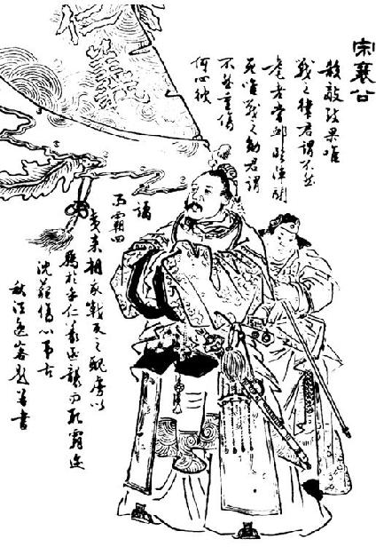

卷三十五 管蔡世家第五
管叔鲜、蔡叔度者，周文王子而武王弟也。武王同母兄弟十人。母曰太姒，文王正妃也。其长子曰伯邑考，次曰武王发，次曰管叔鲜，次曰周公旦，次曰蔡叔度，次曰曹叔振铎，次曰成叔武，次曰霍叔处，次曰康叔封，次曰冉季载。冉季载最少。同母昆弟十人，唯发、旦贤，左右辅文王，故文王舍伯邑考而以发为太子。及文王崩而发立，是为武王。伯邑考既已前卒矣。
武王已克殷纣，平天下，封功臣昆弟。于是封叔鲜于管，封叔度于蔡：二人相纣子武庚禄父【武庚禄父：纣王之子，名禄父，武庚是谥号。】 ，治殷遗民。封叔旦于鲁而相周，为周公。封叔振铎于曹，封叔武于成，封叔处于霍。康叔封、冉季载皆少，未得封。
武王既崩，成王少，周公旦专王室。管叔、蔡叔疑周公之为不利于成王，乃挟武庚以作乱。周公旦承成王命伐诛武庚，杀管叔，而放蔡叔，迁之，与车十乘，徒七十人从。而分殷余民为二：其一封微子启于宋，以续殷祀；其一封康叔为卫君，是为卫康叔。封季载于冉。冉季、康叔皆有驯行【驯行：善行。】 ，于是周公举康叔为周司寇，冉季为周司空，以佐成王治，皆有令名【令名：美名。】 于天下。
管叔鲜和蔡叔度，都是周文王的儿子，周武王的弟弟。周武王的同母兄弟一共有十个人。母亲名叫太姒，是文王的正妻。周文王的大儿子叫伯邑考，二儿子叫武王发，三儿子叫管叔鲜，四儿子叫周公旦，五儿子叫蔡叔度，六儿子叫曹叔振铎，七儿子叫成叔武，八儿子叫霍叔处，九儿子叫康叔封，十儿子叫冉季载。冉季载年纪最小。同母的兄弟十个人，只有武王发和周公旦很贤能，在文王的左右辅佐文王，因此文王舍弃伯邑考而立次子发为太子。等到文王驾崩而太子发继立，就是武王。伯邑考已经在这之前去世。
武王战胜殷纣王，平定天下以后，封赏了功臣和兄弟。于是将管地封给叔鲜，把蔡地封给叔度：让他们二人辅助纣王的儿子武庚禄父，共同治理殷的遗民。武王把鲁地封给叔旦，但是让他留在京师辅助周王，就是周公。武王又把曹地封给叔振铎，把成地封给叔武，把霍地封给叔处。当时康叔封和冉季载都还年少，因此未能受封。
武王已经驾崩，成王年纪还小，周公旦独揽国家大权。管叔、蔡叔怀疑周公的行为对成王不利，就挟持武庚发动叛乱。周公旦秉承着成王的命令讨伐并诛杀了武庚，杀了管叔，流放了蔡叔，在流放他的时候，给了他十辆车，七十个随从。把殷的遗民分成两个部分：一部分封给了微子启，在宋地，让他们延续殷代的祭祀；一部分封给康叔，创建卫国，并让他成为卫国的国君，就是卫康叔。还把季载封在了冉地。冉季、康叔都有驯良的品行，于是周公举荐康叔担任周朝的司寇，让冉季担任周朝的司空，让他们辅佐周成王治理国家，美名都传于天下。
蔡叔度既迁而死。其子曰胡，胡乃改行，率【率：遵循。】 德驯善。周公闻之，而举胡以为鲁卿士，鲁国治。于是周公言于成王，复封胡于蔡，以奉蔡叔之祀，是为蔡仲。余五叔皆就国，无为天子吏者。
蔡仲卒，子蔡伯荒立。蔡伯荒卒，子宫侯立。宫侯卒，子厉侯立。厉侯卒，子武侯立。武侯之时，周厉王失国，奔彘，共和行政，诸侯多叛周。
武侯卒，子夷侯立。夷侯十一年，周宣王即位。二十八年，夷侯卒，子厘侯所事立。
厘侯三十九年，周幽王为犬戎所杀，周室卑而东徙。秦始得列为诸侯。
四十八年，厘侯卒，子共侯兴立。共侯二年卒，子戴侯立。戴侯十年卒，子宣侯措父立。
宣侯二十八年，鲁隐公初立。三十五年，宣侯卒，子桓侯封人立。桓侯三年，鲁弑其君隐公。二十年，桓侯卒，弟哀侯献舞立。
哀侯十一年，初，哀侯娶陈，息侯亦娶陈。息夫人将归【归：出嫁。】 ，过蔡，蔡侯不敬。息侯怒，请楚文王：“来伐我，我求救于蔡，蔡必来，楚因击之，可以有功。”楚文王从之，虏蔡哀侯以归。哀侯留九岁，死于楚。凡立二十年卒。蔡人立其子肸，是为缪侯。
缪侯以其女弟为齐桓公夫人。十八年，齐桓公与蔡女戏船中，夫人荡舟，桓公止之，不止，公怒，归蔡女而不绝也。蔡侯怒，嫁其弟。齐桓公怒，伐蔡；蔡溃，遂虏缪侯，南至楚邵陵。已而诸侯为蔡谢齐，齐侯归蔡侯。二十九年，缪侯卒，子庄侯甲午立。
蔡叔度在流放的途中死去。他的儿子名叫胡，胡改变了他父亲在时的行为，遵循德训，实施善行。周公听说以后，便举荐胡担任了鲁国的卿士，鲁国被治理得非常好。于是周公就对成王进言，又把胡封在了蔡地，以供奉蔡叔的祭祀，这就是蔡仲。其他五叔都来到自己的封国，没有担任周天子的官吏。
蔡仲去世，他的儿子蔡伯荒继立。蔡伯荒去世，他的儿子宫侯继立。宫侯去世，他的儿子厉侯继立。厉侯去世，他的儿子武侯继立。武侯在位的时候，周厉王失掉了国家，逃到彘地，周王朝实行共和行政，诸侯大多叛变了周朝。
武侯去世，他的儿子夷侯继立。夷侯十一年（前827年），周宣王即位。二十八年（前810年），夷侯去世，他的儿子厘侯所事继立。
厘侯三十九年（前771年），周幽王被犬戎杀害，周王室衰败并把都城向东迁徙。秦国开始被列为诸侯。
四十八年（前762年），厘侯去世，他的儿子共侯兴继立。共侯在位二年去世，他的儿子戴侯继立。戴侯在位十年去世，他的儿子宣侯措父继立。
宣侯二十八年（前722年），鲁隐公刚刚继位。三十五年（前715年），宣侯去世，他的儿子桓侯封人继立。桓侯三年（前712年），鲁国人杀掉他们的国君隐公。二十年（前695年），桓侯去世，他的弟弟哀侯献舞继立。
哀侯十一年（前684年），起初，哀侯娶了陈国的女子，息侯也娶了陈国的女子。息夫人出嫁时途经蔡国，蔡侯表现得很不恭敬。息侯大怒，对楚文王请求说：“你来攻打我的国家，我就向蔡国请求救援，蔡国一定会来，楚军趁机攻打蔡国，可以获得战功。”楚文王听从了他的建议，俘虏了蔡哀侯后回国。哀侯被强制留在楚国九年，最后死在了楚国。哀侯在位共二十年去世。蔡国人立他的儿子肸为国君，就是缪侯。
缪侯把他的妹妹嫁给齐桓公做夫人。十八年（前657年），齐桓公和蔡夫人在船上嬉闹，蔡夫人摇晃船身，桓公阻止她，蔡夫人没有停止，桓公大怒，把蔡夫人赶回蔡国，却并未断绝夫妻关系。蔡侯发怒，把妹妹嫁给了别人。齐桓公发怒，讨伐蔡国；蔡国的军队很快就被击溃，于是俘虏了缪侯，齐桓公趁机向南进军到达楚国的邵陵。不久，各诸侯替蔡侯向齐桓公谢罪，齐桓公于是释放了蔡侯。二十九年（前646年），缪侯去世，他的儿子庄侯甲午继立。
庄侯三年，齐桓公卒。十四年，晋文公败楚于城濮。二十年，楚太子商臣弑其父成王代立。二十五年，秦穆公卒。三十三年，楚庄王即位。三十四年，庄侯卒，子文侯申立。
文侯十四年，楚庄王伐陈，杀夏征舒。十五年，楚围郑，郑降楚，楚复 【 ，通“释”。】 之。二十年，文侯卒，子景侯固立。
景侯元年，楚庄王卒。四十九年，景侯为太子般娶妇于楚，而景侯通焉。太子弑景侯而自立，是为灵侯。
灵侯二年，楚公子围弑其王郏敖而自立，为灵王。九年，陈司徒招弑其君哀公。楚使公子弃疾灭陈而有之。十二年，楚灵王以灵侯弑其父，诱蔡灵侯于申，伏甲饮之，醉而杀之，刑其士卒七十人。令公子弃疾围蔡。十一月，灭蔡，使弃疾为蔡公。
楚灭蔡三岁，楚公子弃疾弑其君灵王代立，为平王。平王乃求蔡景侯少子庐，立之，是为平侯。是年，楚亦复立陈。楚平王初立，欲亲诸侯，故复立陈、蔡后。
平侯九年卒，灵侯般之孙东国攻平侯子而自立，是为悼侯。悼侯父曰隐太子友。隐太子友者，灵侯之太子，平侯立而杀隐太子，故平侯卒而隐太子之子东国攻平侯子而代立，是为悼侯。悼侯三年卒，弟昭侯申立。
昭侯十年，朝楚昭王，持美裘二，献其一于昭王而自衣其一。楚相子常欲之，不与。子常谗蔡侯，留之楚三年。蔡侯知之，乃献其裘于子常；子常受之，乃言归蔡侯。蔡侯归而之晋，请与晋伐楚。
庄侯三年（前643年），齐桓公去世。十四年（前632年），晋文公在城濮打败了楚国。二十年（前626年），楚国的太子商臣杀掉他的父亲成王夺得王位。二十五年（前621年），秦穆公去世。三十三年（前613年），楚庄王即位。三十四年（前612年），庄侯去世，他的儿子文侯申继立。
文侯十四年（前598年），楚庄王讨伐陈国，杀了夏征舒。十五年（前597年），楚军包围郑国，郑国的国君向楚国投降，楚王再次释放了他。二十年（前592年），文侯去世，他的儿子景侯固继立。
景侯元年（前591年），楚庄王去世。四十九年（前543年），景侯为太子般迎娶了楚国的女子，而景侯和她私通。太子般杀掉景侯自立为王，就是灵侯。
灵侯二年（前541年），楚国的公子围杀掉他的国王郏敖自立为王，就是楚灵王。九年（前534年），陈国的司徒招杀了他的国君哀公。楚国派公子弃疾灭掉陈国并占有了陈国的土地。十二年（前531年），楚灵王因为灵侯杀死了自己的父亲，引诱蔡灵侯来到申地，在那里埋伏士兵，请蔡灵侯饮酒，把蔡灵侯灌醉后杀死了他，还刑杀了蔡灵侯的随从七十人。同时命令公子弃疾包围蔡国。十一月，楚灵王灭掉蔡国，任命公子弃疾为蔡公。
楚国消灭蔡国三年以后，楚国的公子弃疾杀了他的国君灵王登上王位，就是平王。平王于是寻找蔡景侯的小儿子庐，立他为蔡君，就是平侯。这一年，楚王又恢复了陈国。楚平王刚即位的时候，想要与各诸侯亲近，因此重新拥立陈国和蔡国的后代。
平侯在位九年去世，灵侯般的孙子东国攻打平侯的儿子自立，就是悼侯。悼侯的父亲是隐太子友。隐太子友，是灵侯的太子，平侯继立并杀掉隐太子，因此平侯去世以后，隐太子的儿子东国攻打平侯的儿子并夺取了王位，就是悼侯。悼侯在位三年去世，他的弟弟昭侯申继立。
昭侯十年（前509年），昭侯朝见楚昭王，带着两件美丽又贵重的裘皮大衣，将其中一件献给了楚昭王，而自己穿着另外一件。楚国的丞相子常想要得到皮衣，昭侯没有送给他。子常就在楚昭王面前讲蔡侯的坏话，于是楚昭王把蔡侯扣留在楚国长达三年。蔡昭侯得知自己被扣留的原因以后，便把裘皮大衣献给了子常；子常得到裘皮大衣，就对楚昭王进言从而释放蔡侯回国。蔡侯回国以后就前往晋国，请求和晋国一起讨伐楚国。
十三年春，与卫灵公会邵陵。蔡侯私于周苌cháng弘【苌弘：字叔，周景王、周敬王的大臣刘文公所属大夫。】 以求长于卫；卫使史鳅【史鳅：名鳅，字子鱼，卫国史官。】 言康叔之功德，乃长卫。夏，为晋灭沈，楚怒，攻蔡。蔡昭侯使其子为质于吴，以共伐楚。冬，与吴王阖闾遂破楚入郢。蔡怨子常，子常恐，奔郑。十四年，吴去而楚昭王复国。十六年，楚令尹【楚令尹：此时楚国的令尹是子西。】 为其民泣以谋蔡，蔡昭侯惧。二十六年，孔子如蔡。楚昭王伐蔡，蔡恐，告急于吴。吴为蔡远，约迁以自近，易以相救；昭侯私许，不与大夫计。吴人来救蔡，因迁蔡于州来。二十八年，昭侯将朝于吴，大夫恐其复迁，乃令贼利杀昭侯；已而诛贼利以解过，而立昭侯子朔，是为成侯。
成侯四年，宋灭曹。十年，齐田常弑其君简公。十三年，楚灭陈。十九年，成侯卒，子声侯产立。声侯十五年卒，子元侯立。元侯六年卒，子侯齐立。
侯齐四年，楚惠王灭蔡，蔡侯齐亡，蔡遂绝祀。后陈灭三十三年。
伯邑考，其后不知所封。武王发，其后为周，有本纪言。管叔鲜作乱诛死，无后。周公旦，其后为鲁，有世家言。蔡叔度，其后为蔡，有世家言。曹叔振铎，有后为曹，有世家言。成叔武，其后世无所见。霍叔处，其后晋献公时灭霍。康叔封，其后为卫，有世家言。冉季载，其后世无所见。
昭侯十三年（前506年）春季，他和卫灵公在邵陵举行会盟。蔡侯暗中收买了周的大夫苌弘，请求让蔡国在会盟时排在卫国的前面；卫国派史官鳅申称赞了卫国始祖康叔的功德，于是将卫国排在前面。夏季，蔡国帮助晋国消灭了沈国，楚国大怒，攻打蔡国。蔡昭侯把儿子送到吴国当人质，请求共同讨伐楚国。冬季，蔡国和吴王阖闾共同出兵打败了楚军，攻入郢都。蔡侯怨恨子常，子常十分恐惧，逃奔郑国。昭侯十四年（前505年），吴国撤兵，楚昭王恢复了楚国。昭侯十六年（前503年），楚国的令尹为他的人民遭到吴、蔡的杀戮而哭泣，谋划攻打蔡国，蔡昭侯很害怕。昭侯二十六年（前493年），孔子前往蔡国。楚昭王讨伐蔡国，蔡国恐惧，便向吴国告急。吴王认为蔡国的都城距离吴国路途遥远，约蔡侯迁都以靠近吴国，从而方便救援；昭侯私下同意，没有和大夫们商量。吴国派军队前来救援，趁机把蔡国的都城迁到州来。二十八年（前491年），蔡昭侯准备朝见吴王，大夫们担心他再次迁都，便派一个叫利的贼寇杀了昭侯；不久，大夫们又杀掉贼寇利推卸罪责，然后他们拥立昭侯的儿子朔，就是成侯。
成侯四年（前487年），宋国灭掉曹国。十年（前481年），齐国的田常杀了他的国君简公。十三年（前478年），楚国灭掉陈国。十九年（前472年），成侯去世，他的儿子声侯产继立。声侯在位十五年去世，他的儿子元侯继立。元侯在位六年去世，他的儿子侯齐继立。蔡侯齐四年（前447年），楚惠王灭掉蔡国，蔡侯齐逃走，蔡国便断绝了祭祀。蔡国比陈国晚灭亡三十三年。
伯邑考，他的后代不知道被封在了哪里。武王发，他的后代为周王，在《本纪》中有记载。管叔鲜发动叛乱，被诛杀，没有后代。周公旦，他的后人为鲁侯，在《鲁周公世家》中有记载。蔡叔度，他的后人为蔡侯，在《管蔡世家》中有记载。曹叔振铎，他的后人为曹侯，在《管蔡世家》中有记载。成叔武，他的后人没有记载。霍叔处，他的后人是霍侯，在晋献公时被灭。康叔封，他的后人为卫侯，在《卫康叔世家》中有记载。冉季载，他的后人没有记载。
太史公曰：管蔡作乱，无足载者。然周武王崩，成王少，天下既疑，赖同母之弟成叔、冉季之属十人为辅拂【拂：通“弼”。】 ，是以诸侯卒宗周，故附之世家言。
太史公说：管叔、蔡叔发动叛乱，没什么值得记录的。然而周武王驾崩，成王年纪还小，天下人都心存疑虑，全靠同母的弟弟成叔、冉季等十个人的辅助，所以诸侯最终都尊崇周室，因此在《世家》中有记载。
曹叔振铎者，周武王弟也。武王已克殷纣，封叔振铎于曹。
叔振铎卒，子太伯脾立。太伯卒，子仲君平立。仲君平卒，子宫伯侯立。宫伯侯卒，子孝伯云立。孝伯云卒，子夷伯喜立。
夷伯二十三年，周厉王奔于彘。
三十年卒，弟幽伯强立。幽伯九年，弟苏杀幽伯代立，是为戴伯。戴伯元年，周宣王已立三岁。三十年，戴伯卒，子惠伯兕立。
惠伯二十五年，周幽王为犬戎所杀，因东徙，益卑，诸侯畔之。秦始列为诸侯。
三十六年，惠伯卒，子石甫立，其弟武杀之代立，是为缪公。缪公三年卒，子桓公终生立。
桓公三十五年，鲁隐公立。四十五年，鲁弑其君隐公。四十六年【四十六年：按：后文华父督弑宋殇公事当在曹桓公四十七年。】 ，宋华父督【华父督：名督，字华父，宋戴公之孙，好父说之子，宋国太宰。】 弑其君殇公，及孔父【孔父：孔父嘉，宋国司马，孔子祖先。】 。五十五年，桓公卒，子庄公夕姑立。
庄公二十三年，齐桓公始霸。
曹叔振铎，是周武王的弟弟。武王攻克殷纣王后，把叔振铎封在了曹地。
叔振铎去世，他的儿子太伯脾继立。太伯去世，他的儿子仲君平继立。仲君平去世，他的儿子宫伯侯继立。宫伯侯去世，他的儿子孝伯云继立。孝伯云去世，他的儿子夷伯喜继立。
夷伯二十三年，周厉王逃到了彘地。
夷伯在位三十年去世，他的弟弟幽伯强继立。幽伯九年，他的弟弟苏杀掉幽伯取代了他，就是戴伯。戴伯元年（前825年），周宣王已经即位三年。三十年（前796年），戴伯去世，他的儿子惠伯兕继立。
惠伯二十五年（前771年），周幽王被犬戎杀死，周王室顺势向东迁徙，王室的力量日益卑微，诸侯纷纷背叛了周室。秦国开始位列诸侯。
三十六年（前760年），惠伯去世，他的儿子石甫继立，他的弟弟武杀了石甫夺得君位，就是缪公。缪公在位三年去世，他的儿子桓公终生继立。
桓公三十五年（前722年），鲁隐公即位。四十五年（前712年），鲁国人杀了他们的国君隐公。四十六年（前711年），宋国的华父督杀了他的国君殇公，以及大夫孔父。五十五年（前702年），桓公去世，他的儿子庄公夕姑继立。
庄公二十三年（前679年），齐桓公开始在诸侯中称霸。
三十一年，庄公卒，子厘公夷立。厘公九年卒，子昭公班立。昭公六年，齐桓公败蔡，遂至楚召陵。九年，昭公卒，子共公襄立。
共公十六年，初，晋公子重耳其亡过曹，曹君无礼，欲观其骈胁。厘负羁【厘负羁：曹国大夫。】 谏，不听，私善于重耳。二十一年，晋文公重耳伐曹，虏共公以归，令军毋入厘负羁之宗族闾。或说晋文公曰：“昔齐桓公会诸侯，复异姓；今君囚曹君，灭同姓，何以令于诸侯？”晋乃复归共公。
二十五年，晋文公卒。三十五年，共公卒，子文公寿立。文公二十三年卒，子宣公强立。宣公十七年卒，弟成公负刍立。
成公三年，晋厉公伐曹，虏成公以归，已复释之。五年，晋栾书、中行偃使程滑弑其君厉公。二十三年，成公卒，子武公胜立。武公二十六年，楚公子弃疾弑其君灵王代立。二十七年，武公卒，子平公须立。平公四年卒，子悼公午立。是岁，宋、卫、陈、郑皆火。
三十一年（前671年），庄公去世，他的儿子厘公夷继立。厘公在位九年去世，他的儿子昭公班继立。昭公六年（前656年），齐桓公打败蔡国，于是来到楚国的邵陵。九年（前653年），昭公去世，他的儿子共公襄继立。
共公十六年（前637年）。起初，晋国的公子重耳在逃亡的时候路过曹国，曹国的国君对待重耳很无礼，想要观看重耳长在一起的肋骨。厘负羁劝谏，曹君没有听从，于是厘负羁私下亲近重耳。二十一年（前632年），晋文公重耳讨伐曹国，俘虏了曹共公后返回，下令晋军不许进入厘负羁家族居住的地方。有人对晋文公说：“从前齐桓公和诸侯举行会盟，恢复了异姓国家；如今您囚禁了曹君，灭亡同姓国家，凭什么向天下的诸侯发号施令呢？”晋文公于是将共公释放回国。
二十五年（前628年），晋文公去世。三十五年（前618年），共公去世，他的儿子文公寿继立。文公在位二十三年去世，他的儿子宣公强继立。宣公在位十七年去世，他的弟弟成公负刍继立。
成公三年（前575年），晋厉公讨伐曹国，俘虏成公后返回，不久又释放了他。五年（前573年），晋国的栾书、中行偃命令程滑杀了他们的国君厉公。二十三年（前555年），成公去世，他的儿子武公胜继立。武公二十六年（前529年），楚国的公子弃疾杀掉他的国君灵王取代他成为国君。二十七年（前528年），武公去世，他的儿子平公须继立。平公在位四年去世，他的儿子悼公午继立。这一年，宋国、卫国、陈国、郑国都发生了火灾。
悼公八年，宋景公立。九年，悼公朝于宋，宋囚之；曹立其弟野，是为声公。悼公死于宋，归葬。
声公五年，平公弟通弑声公代立，是为隐公。隐公四年，声公弟露弑隐公代立，是为靖公。靖公四年卒，子伯阳立。
伯阳三年，国人有梦众君子立于社宫，谋欲亡曹；曹叔振铎止之，请待公孙强，许之。旦，求之曹，无此人。梦者戒其子曰：“我亡，尔闻公孙强为政，必去曹，无离曹祸。”及伯阳即位，好田弋之事。六年，曹野人公孙强亦好田弋，获白雁而献之，且言田弋之说，因访政事。伯阳大说之，有宠，使为司城以听政。梦者之子乃亡去。
公孙强言霸说于曹伯。十四年，曹伯从之，乃背晋干【干：犯。】 宋。宋景公伐之，晋人不救。十五年，宋灭曹，执曹伯阳及公孙强以归而杀之。曹遂绝其祀。
悼公八年（前516年），宋景公即位。九年（前515年），悼公到宋国朝见景公，宋国囚禁了他；曹国的人拥立悼公的弟弟野成为国君，就是声公。悼公最后死在了宋国，他的尸体被送回曹国安葬。
声公五年（前510年），平公的弟弟通杀掉声公夺得了国君的位置，就是隐公。隐公四年（前506年），声公的弟弟露杀掉隐公夺得君位，就是靖公。靖公在位四年去世，他的儿子伯阳继立。
伯阳三年（前499年），曹国有个人梦到很多君子站在祭祀土地神的社宫中，谋划要灭亡曹国；曹叔振铎阻止他们，请求等待公孙强，君子们都同意了。天亮以后，这个人在整个曹国寻找公孙强，都没发现这个人。做梦的人告诉他的儿子说：“我死了以后，你要是听说公孙强当政了，就一定要离开曹国，避开曹国灭亡的祸患。”等到伯阳即位，爱好打猎。六年（前496），曹国的乡下有个名叫公孙强的人也喜欢打猎，猎获白雁以后就献给了伯阳，并和伯阳讨论打猎的事情，伯阳于是向他请教政事。伯阳十分高兴，公孙强得宠，伯阳任命他为司城官，参预国家的政事。做梦人的儿子于是便逃走了。
公孙强向曹伯述说称霸的建议。十四年（前488年），曹伯听从公孙强的建议，于是背叛晋国，侵扰宋国。宋景公讨伐曹国，晋国人没有派兵救援。十五年（前487年），宋国灭掉曹国，将曹伯阳和公孙强俘虏到宋国并杀了他们。曹国于是断绝了祭祀，国家灭亡。
太史公曰：余寻曹共公之不用僖负羁，乃乘轩者三百人，知唯德之不建。及振铎之梦，岂不欲引曹之祀者哉？如公孙强不修厥政，叔铎之祀忽诸【忽诸：忽然。】 。
太史公说：我找寻曹共公不用厘负羁的原因，于是知道手下乘坐的带帷幕车的就有三百人，我知道他只是没有树立德政。等到出现振铎阻止君子谋划亡曹的梦，难道这不是想要延长曹国的祭祀吗？如果公孙强没有修整他的霸道政治，曹叔振铎的祭祀就不会突然灭绝。
卷三十六 陈杞世家第六
陈胡公满【陈胡公满：陈国始封国君，妫姓，名满，胡字为谥。】 者，虞帝舜之后也。昔舜为庶人时，尧妻之二女，居于妫【妫：妫水入黄河之处。】 汭，其后因为氏姓，姓妫氏。舜已崩，传禹天下，而舜子商均为封国。夏后之时，或失或续。至于周武王克殷纣，乃复求舜后，得妫满，封之于陈，以奉帝舜祀，是为胡公。
胡公卒，子申公犀侯立。申公卒，弟相公皋羊立。相公卒，立申公子突，是为孝公。孝公卒，子慎公圉戎立。慎公当周厉王时。慎公卒，子幽公宁立。
幽公十二年，周厉王奔于彘。
二十三年，幽公卒，子厘公孝立。厘公六年，周宣王即位。三十六年，厘公卒，子武公灵立。武公十五年卒，子夷公说立。是岁，周幽王即位。夷公三年卒，弟平公燮立。平公七年，周幽王为犬戎所杀，周东徙。秦始列为诸侯。
二十三年，平公卒，子文公圉立。
陈胡公满，是虞帝舜的后代。从前舜还是平民时，尧就把自己的两个女儿嫁给了他，在妫汭居住，他的后代就用这个地名当姓氏，姓了妫。舜去世之后，将天下禅让给了夏禹，自己的儿子商均则被封为诸侯。夏朝后期，舜后人的侯位时失时续。到了周武王灭掉殷纣王时，又再次寻求舜的子孙后代，找到了妫满，将他封在陈地，以供奉舜帝的祭祀，这便是胡公。
胡公去世后，他的儿子申公犀侯继位。申公去世后，他的弟弟相公皋羊继位。相公去世后，立申公的儿子突，即孝公。孝公去世后，其子慎公圉戎继位。慎公在位时，正值周厉王当政。慎公去世后，其子幽公宁继位。
幽公十二年（前843年），周厉王逃至彘地。
二十三年（前832年），幽公去世，其子厘公孝继位。厘公六年（前826年），周宣王即位。三十六年（前796年），厘公去世，其子武公灵继位。武公在位十五年去世，其子夷公说继位。这一年，周幽王即位。夷公在位三年去世，其弟平公燮继位。平公七年（前771年），周幽王被犬戎杀害，周王朝都城东迁。秦国开始成为诸侯。
二十三年（前755年），平公去世，其子文公圉继位。
文公元年，取蔡女，生子佗。十年，文公卒，长子桓公鲍立。
桓公二十三年，鲁隐公初立。二十六年，卫杀其君州吁。三十三年，鲁弑其君隐公。
三十八年正月甲戌己丑，桓公鲍卒。桓公弟佗，其母蔡女，故蔡人为佗杀五父及桓公太子免而立佗tuó，是为厉公。桓公病而乱作，国人分散，故再赴。
厉公二年，生子敬仲完。周太史过陈，陈厉公使以《周易》筮之，卦得《观》之《否》：“是为观国之光，利用宾于王。此其代陈有国乎？不在此，其在异国？非此其身，在其子孙。若在异国，必姜姓。姜姓，太岳【太岳：即四岳，传说是共工的后裔，辅助禹治水有功，封于吕，赐姜姓。】 之后。物莫能两大，陈衰，此其昌乎？”
厉公取蔡女，蔡女与蔡人乱，厉公数如蔡淫。七年，厉公所杀桓公太子免之三弟，长曰跃，中曰林，少曰杵臼，共令蔡人诱厉公以好女，与蔡人共杀厉公而立跃，是为利公。利公者，桓公子也。利公立五月卒，立中弟林，是为庄公。庄公七年卒，少弟杵臼立，是为宣公。
宣公三年，楚武王卒，楚始强。十七年，周惠王娶陈女为后。
文公元年（前754年），娶了蔡国的女子为妻，生下儿子叫佗。十年（前745年），文公去世，他的长子桓公鲍继位。
桓公二十三年（前722年），鲁隐公刚刚即位不久。二十六年（前719年），卫国人杀了他们的国君州吁。三十三年（前712年），鲁国人杀了他们的国君隐公。
三十八年（前707年）正月甲戌日或己丑日，桓公鲍去世。由于他弟弟佗的母亲是蔡国人，因此蔡国人为了佗而杀了五父和桓公的太子免，拥立佗继位，便是厉公。桓公病重的时侯内乱就发生了，国民纷纷离散，因此再次发来讣告。
厉公二年（前705年），生下儿子敬仲完。正巧周太史经过陈国，陈厉公让他用《周易》为自己的儿子占卜，得到的卦象是从《观》卦变成《否》卦，周太史说：“这是国家的祥兆，利于作天子之宾。他可能会替代陈氏而自己享有国家吧？不是在陈国这里，或许会在他国？此事不会发生在他在世时，可能发生在他的子孙之时。如发生在其他的国家，一定是姜姓国家。姜姓是太岳的后代。事物不能两者并大，待到陈国衰亡了，他才会强盛吧？”
陈厉公娶了蔡国女子为妻，蔡女与蔡国人通奸，厉公也曾数次前往蔡国与其他女人淫乱。七年（前700年），被厉公所杀的桓公太子免的三个弟弟，老大叫跃，老二叫林，最小的叫杵臼，合谋叫蔡国人用美女引诱厉公来到蔡国，之后与蔡国人一起杀死了厉公而拥立跃，就是利公。利公，是桓公的儿子。利公仅在位五个月便去世了，二弟林继位，就是庄公。庄公在位七年去世，最小的弟弟杵臼继位，就是宣公。
宣公三年（前690年），楚武王去世，楚国开始逐渐强大。十七年（前676年），周惠王娶了陈国的女子当王后。
二十一年，宣公后有嬖姬生子款，欲立之，乃杀其太子御寇。御寇素爱厉公子完，完惧祸及己，乃奔齐。齐桓公欲使陈完为卿，完曰：“羁旅之臣，幸得免负檐【檐：负荷。】 ，君之惠也，不敢当高位。”桓公使为工正。齐懿仲欲妻陈敬仲，卜之，占曰：“是谓凤皇于飞，和鸣锵锵。有妫之后，将育于姜。五世其昌，并于正卿。八世之后，莫之与京【京：大。】 。”
三十七年，齐桓公伐蔡，蔡败；南侵楚，至召陵，还过陈。陈大夫辕涛涂恶其过陈，诈齐令出东道。东道恶，桓公怒，执陈辕涛涂。是岁，晋献公杀其太子申生。
四十五年，宣公卒，子款立，是为穆公。穆公五年，齐桓公卒。十六年，晋文公败楚师于城濮。是岁，穆公卒，子共公朔立。共公六年，楚太子商臣弑其父成王代立，是为穆王。十一年，秦穆公卒。十八年，共公卒，子灵公平国立。
灵公元年，楚庄王即位。六年，楚伐陈。十年，陈及楚平。
十四年，灵公与其大夫孔宁、仪行父皆通于夏姬，衷其衣以戏于朝。泄冶【泄冶：陈国大夫。】 谏曰：“君臣淫乱，民何效焉？”灵公以告二子，二子请杀泄冶，公弗禁，遂杀泄冶。十五年，灵公与二子饮于夏氏，公戏二子曰：“征舒似汝。”二子曰：“亦似公。”征舒怒。灵公罢酒出，征舒伏弩厩门射杀灵公。孔宁、仪行父皆奔楚，灵公太子午奔晋。征舒自立为陈侯。征舒，故陈大夫也。夏姬，御叔之妻，舒之母也。
二十一年（前672年），宣公之后又娶了个宠妃，生了个儿子名叫款，宣公想要立款为太子，于是杀了太子御寇。御寇一直都很喜欢厉公之子完，完担心祸事波及自己，于是逃奔齐国。齐桓公打算任命陈完为卿，陈完回答说：“我作为一个寄居他国的臣子，有幸能免于劳役，就是您给我的恩惠了，我不敢再担任高官。”齐桓公于是让他担任工正官。齐懿仲打算将女儿嫁给陈完，占卜这件事，得到的卦辞说：“此对夫妻好比是雌雄凤凰鸟比翼双飞，鸣叫声锵锵有力。妫姓的后人，将在姜姓的国家发展壮大起来。五代以后就能够昌盛，职位可与正卿并驾齐驱。八代之后，无人能有他那么强大。”
三十七年（前656年），齐桓公攻打蔡国，蔡军战败；齐国乘胜向南侵入楚国境内，直至邵陵，在回来的途中经过陈国。陈国大夫辕涛涂嫌齐军会骚扰陈国，于是骗齐兵走东边的道路。而东边的道路十分险恶，桓公因此大怒，将陈国大夫辕涛涂抓了起来。这一年，晋献公将太子申生杀死了。
四十五年（前648年），宣公去世，其子款继位，便是穆公。穆公五年（前643年），齐桓公去世。十六年（前632年），晋文公在城濮打败了楚军。这一年，穆公去世，其子共公朔继位。陈共公六年（前626年），楚太子商臣杀了父亲成王，自立为王，便是穆王。十一年（前621年），秦穆公去世。十八年（前614年），共公去世，其子灵公平国继位。
陈灵公元年（前613年），楚庄王即位。六年（前608年），楚国攻打陈国。十年（前604年），陈国与楚国议和。
十四年（前600年），陈灵公和陈国大夫孔宁、仪行父都与夏姬通奸，而且穿着夏姬的内衣公然在朝廷上嬉笑。大夫泄冶进谏说：“君主与大臣都淫乱好色，百姓们怎能不效仿呢？”陈灵公将这些话告诉了孔宁、仪行父，二人请求杀掉泄冶，陈灵公并没有制止他们，于是他们杀了泄冶。十五年（前599年），陈灵公与大夫孔宁、仪行父在夏氏家饮酒取乐，陈灵公对孔宁和仪行父开玩笑说：“征舒长得很像你们。”二人回答说：“他长得也很像您。”征舒大怒。陈灵公喝完酒后出来，征舒埋伏在马房门口用弓弩射死了陈灵公。孔宁、仪行父全都逃奔楚国，而陈灵公的太子午则逃奔晋国。征舒自立为陈侯。征舒，从前曾是陈国大夫。夏姬，是御叔的妻子，征舒的母亲。
成公元年冬，楚庄王为夏征舒杀灵公，率诸侯伐陈。谓陈曰：“无惊，吾诛征舒而已。”已诛征舒，因县陈而有之，群臣毕贺。申叔时【申叔时：楚国大夫。】 使于齐来还，独不贺。庄王问其故，对曰：“鄙语有之，牵牛径人田，田主夺之牛。径则有罪矣，夺之牛，不亦甚乎？今王以征舒为贼弑君，故征兵诸侯，以义伐之，已而取之，以利其地，则后何以令于天下！是以不贺。”庄王曰：“善。”乃迎陈灵公太子午于晋而立之，复君陈如故，是为成公。孔子读史记至楚复陈，曰：“贤哉楚庄王！轻千乘之国而重一言。”
八年，楚庄王卒。二十九年，陈倍【倍：通“背”。】 楚盟。三十年，楚共王伐陈。是岁，成公卒，子哀公弱立。楚以陈丧，罢兵去。
哀公三年，楚围陈，复释之。二十八年，楚公子围弑其君郏敖自立，为灵王。
三十四年，初，哀公娶郑，长姬生悼太子师，少姬生偃。二嬖妾，长妾生留，少妾生胜。留有宠哀公，哀公属之其弟司徒招。哀公病，三月，招杀悼太子，立留为太子。哀公怒，欲诛招，招发兵围守哀公，哀公自经杀。招卒立留为陈君。四月，陈使使赴楚。楚灵王闻陈乱，乃杀陈使者，使公子弃疾发兵伐陈，陈君留奔郑。九月，楚围陈。十一月，灭陈。使弃疾为陈公。
招之杀悼太子也，太子之子名吴，出奔晋。晋平公问太史赵曰：“陈遂亡乎？”对曰：“陈，颛顼之族。陈氏得政于齐，乃卒亡。自幕至于瞽瞍sǒu，无违命。舜重之以明德。至于遂，世世守之。及胡公，周赐之姓，使祀虞帝。且盛德之后，必百世祀。虞之世未也，其在齐乎？”
陈成公元年（前598年）冬季，楚庄王以夏征舒杀死陈灵公为由，率领诸侯讨伐陈国。并对陈国人说：“不要害怕，我只是来诛杀夏征舒而已。”可是楚庄王杀死夏征舒后，却趁机占领了陈国，将它改成了楚国的一个县，楚国群臣为此都来表示庆贺。申叔时出使齐国返回，只有他不来祝贺。楚庄王问他原因，申叔时回答说：“俗语说得好，牵牛的人踩踏了别人家的田地，田地的主人就夺走了他的牛。踩踏田地确实不对，可是田地的主人却因此而夺走了人家的牛，不也很过分吗？如今大王您因为夏征舒这个贼臣杀死了君主，所以征集诸侯的军队，打着正义的旗号攻打他，可是杀死夏征舒后却顺势占领了陈国，由于贪图陈国的土地而将其据为己有，那么今后您还凭什么号令天下！因此我没来庆贺。”楚庄王说：“你说得很有道理。”于是从晋国迎回陈灵公的太子妫午并立其为国君，让他像以前一样治理陈国，便是成公。孔子在阅读史书时看到楚国恢复陈国的史事，说：“楚庄王好贤明啊！轻视占有一个千乘的国家而重视申叔时的一番有益之言。”
八年（前591年），楚庄王去世。二十九年（前570年），陈国违背了与楚国订立的盟约。三十年（前569年），楚共王攻打陈国。这一年，陈成公去世，其子哀公弱继位。楚国因陈国办理丧事，于是撤兵回国了。
哀公三年（前566年），楚军包围陈国，后来又再次撤兵饶过了陈国。二十八年（前541年），楚国的公子围杀死楚王郏敖并自立为王，便是灵王。
三十四年（前535年），起初，哀公娶了郑国的女子为妻，长姬生下悼太子师，少姬生下儿子偃。哀公还有两个爱妾，长妾生了个儿子叫留，少妾生了个儿子叫胜。哀公最宠爱留，将其托付给了自己的弟弟司徒招。哀公生了病，三月，招杀了悼太子，拥立留成为太子。哀公大怒，打算杀死招，而招发兵围住哀公，后来哀公自缢而死。招最终拥立留当了陈国国君。四月，陈国派使节到楚国报丧。楚灵王听说陈国发生了内乱，于是杀死了陈国的使节，派遣公子弃疾发兵讨伐陈国，陈国国君留逃奔郑国。九月，楚国包围陈国。十一月，灭掉陈国。楚灵王让公子弃疾当了陈公。
招杀死悼太子时，悼太子的儿子叫吴，出逃投奔晋国。晋平公问太史赵说：“陈国真的要灭亡了吗？”太史赵回答说：“陈国，是颛顼的后代。待陈氏在齐国得到政权时，最终才会灭亡。陈国祖先从幕一直传到瞽瞍，都没有违抗天命。舜注重发扬明德。到了遂，世代恪守其道。到胡公时期，周天子赐姓氏给他，命他祭祀虞帝舜。而且盛德的帝王后代，必定会相传至百世。虞舜的世系还未到百世，也许会在齐国继续发展吧？”
楚灵王灭陈五岁，楚公子弃疾弑灵王代立，是为平王。平王初立，欲得和诸侯，乃求故陈悼太子师之子吴，立为陈侯，是为惠公。惠公立，探续哀公卒时年而为元，空籍五岁矣。
十年，陈火。十五年，吴王僚使公子光伐陈，取胡、沈而去。二十八年，吴王阖hé闾lǘ与子胥败楚入郢。是年，惠公卒，子怀公柳立。
怀公元年，吴破楚，在郢，召陈侯。陈侯欲往，大夫曰：“吴新得意；楚王【楚王：指楚昭王。】 虽亡，与陈有故，不可倍。”怀公乃以疾谢吴。四年，吴复召怀公。怀公恐，如吴。吴怒其前不往，留之，因卒吴。陈乃立怀公之子越，是为愍公。
愍公六年，孔子适陈。吴王夫差伐陈，取三邑而去。十三年，吴复来伐陈，陈告急楚，楚昭王来救，军于城父，吴师去。是年，楚昭王卒于城父。时孔子在陈。十五年，宋灭曹。十六年，吴王夫差伐齐，败之艾陵，使人召陈侯。陈侯恐，如吴。楚伐陈。二十一年，齐田常弑其君简公。二十三年，楚之白公胜杀令尹子西、子綦，袭惠王。叶公攻败白公，白公自杀。
二十四年，楚惠王复国，以兵北伐，杀陈愍公，遂灭陈而有之。是岁，孔子卒。
楚灵王灭掉陈国五年之后，楚公子弃疾杀了灵王并自立为君，便是平王。平王刚刚即位，想要得到各诸侯的拥护与支持，于是找到了从前陈国悼太子师的儿子吴，拥立他为陈侯，便是惠公。惠公即位后，上溯到陈哀公去世的那一年为元年，此时惠公的在位时间其实空借了五年。
惠公十年（前524年），陈国发生了火灾。十五年（前519年），吴王僚派公子光攻打陈国，占领了胡、沈二地后返回。二十八年（前506年），吴王阖闾与大夫伍子胥打败楚国，攻入了郢都。这一年，惠公去世，其子怀公柳继位。
怀公元年（前505年），吴国攻破了楚国，吴王在郢都，召见陈怀公。陈怀公想要前往，陈国的大夫们说：“吴王最近十分得意，楚王虽然逃亡，但与陈国还是有旧交情的，我们不能违背陈楚之交。”陈怀公于是以生病为借口婉言谢绝了吴王。四年（前502年），吴王又一次召见怀公。怀公惧怕，前往吴国。吴王生气怀公上次没有来，扣留了他，最终怀公死在了吴国。陈国人于是拥立怀公的儿子越，便是愍公。
愍公六年（前496年），孔子来到陈国。吴王夫差攻打陈国，攻取了陈国三座城邑后返回。十三年（前489年），吴王再次来攻打陈国，陈国于是向楚国告急求救，楚昭王派兵援救，军队驻扎在城父，吴军因此撤退。这一年，楚昭王在城父去世。当时孔子仍在陈国。十五年（前487年），宋国灭掉了曹国。十六年（前486年），吴王夫差攻打齐国，在艾陵打败齐军，派人召见陈愍公。陈愍公害怕，去了吴国。楚国讨伐陈国。二十一年（前481年），齐国大夫田常杀了他的国君齐简公。二十三年（前479年），楚国的白公胜杀了令尹子西、子綦，并袭击楚惠王。后来楚国叶公打败了白公，白公自杀。
二十四年（前478年），楚惠王复国，举兵北伐，杀了陈愍公，于是灭掉了陈国，并吞并了陈国的国土。这一年，孔子逝世。
杞【札：古国名，姒姓。】 东楼公者，夏后禹之后苗裔也。殷时或封或绝。周武王克殷纣，求禹之后，得东楼公，封之于杞，以奉夏后氏祀。
东楼公生西楼公，西楼公生题公，题公生谋娶公。谋娶公当周厉王时。谋娶公生武公。武公立四十七年卒，子靖公立。靖公二十三年卒，子共公立。共公八年卒，子德公立。德公十八年卒，弟桓公姑容立。桓公十七年卒，子孝公匄立。孝公十七年卒，弟文公益姑立。文公十四年卒，弟平公郁立。平公十八年卒，子悼公成立。悼公十二年卒，子隐公乞立。七月，隐公弟遂弑隐公自立，是为厘公。
厘公十九年卒，子愍公维立。愍公十五年，楚惠王灭陈【楚惠王灭陈：楚惠王灭陈事在杞愍公九年，此误。】 。十六年，愍公弟阏路弑愍公代立，是为哀公。哀公立十年卒，愍公子敕立，是为出公。出公十二年卒，子简公春立。立一年，楚惠王之四十四年，灭杞。杞后陈亡三十四年。杞小微，其事不足称述。
杞国的东楼公，是夏朝大禹的后代。商朝时，其封国时断时续。周武王灭掉商纣王之后，寻求禹的后人，找到了东楼公，把他封到杞地，以供奉夏后氏的祭祀。
东楼公生了儿子西楼公，西楼公生了儿子题公，题公生了儿子谋娶公。谋娶公在位时正值周厉王当政。谋娶公生了儿子武公。武公在位四十七年去世，其子靖公继立。靖公在位二十三年去世，其子共公继立。共公在位八年去世，其子德公继立。德公在位十八年去世，他的弟弟桓公姑容继立。桓公在位十七年去世，其子孝公匄继立。孝公在位十七年去世，其弟文公益姑继立。文公在位十四年去世，其弟平公郁继立。平公在位十八年去世，其子悼公成继立。悼公在位十二年去世，其子隐公乞继立。七月，隐公的弟弟杀了隐公自立为君，便是厘公。
厘公在位十九年去世，其子愍公维继立。愍公在位第十五年时，楚惠王灭掉了陈国。愍公十六年（前471年），愍公的弟弟阏路杀了愍公自立为君，便是哀公。哀公在位十年去世，愍公的儿子敕继立，便是出公。出公在位十二年去世，其子简公春继立。简公即位这一年，是楚惠王四十四年（前445年），楚国灭掉了杞国。杞国比陈国晚灭亡了三十四年。杞国是个小国，其事迹不值得称道论述。
舜之后，周武王封之陈，至楚惠王灭之，有世家言。禹之后，周武王封之杞，楚惠王灭之，有世家言。契之后为殷，殷有本纪言。殷破，周封其后于宋，齐愍王灭之，有世家言。后稷【后稷：传说为舜时大臣，周朝始祖。】 之后为周，秦昭王灭之，有本纪言。皋陶之后，或封英、六，楚穆王灭之，无谱。伯夷之后，至周武王复封于齐，曰太公望，陈氏灭之，有世家言。伯翳之后，至周平王时封为秦，项羽灭之，有本纪言。垂、益、夔kuí、龙，其后不知所封，不见也。右十一人者，皆唐虞之际名有功德臣也；其五人之后皆至帝王，余乃为显诸侯。滕、薛、驺，夏、殷、周之间封也，小，不足齿列，弗论也。
周武王时，侯伯尚千余人。及幽、厉之后，诸侯力攻相并。江【江：古国名，嬴姓。】 、黄【黄：古国名，嬴姓。】 、胡【胡：古国名，姬姓。】 、沈【沈：古国名，姬姓。】 之属，不可胜数，故弗采着于传云。
舜的后代，被周武王封于陈，到楚惠王时被灭掉了，有《陈杞世家》记载。禹的后代，被周武王封在杞，楚惠王灭掉杞国，有《陈杞世家》记载。契的后代为商朝王族，有《殷本纪》记载。商朝灭亡后，周将其后代封于宋，齐愍王灭掉了宋国，有《宋微子世家》记载。后稷的后代是周朝的王族，秦昭王灭掉周朝，有《周本纪》记载。皋陶的后代，有的被封在了英、六地，楚穆王灭掉了他们，未留下谱牒记载。伯夷的后代，至周武王时又被封于齐，称为太公望，后被陈氏灭掉，有《齐太公世家》记载。伯翳的后代，到周平王时被封于秦国，项羽灭掉了秦国，有《秦本纪》记载。垂、益、夔、龙，他们的后代不知被封在何处，没有任何记载。以上这十一人，均为唐、虞时期的有功德之臣；其中五人的后代都做过帝王，其余都是显赫的诸侯。滕、薛、驺，分别是夏、商、周三代时所分封的小，国家很小，不足挂齿，因此在这里不加以论述了。
周武王时期，封侯封伯的还有一千多人。待到周幽王、厉王之后，诸侯之间相互攻打吞并。江、黄、胡、沈之类的小国，不计其数，因此就不在传中过多记述了。
太史公曰：舜之德可谓至矣！禅位于夏，而后世血食【血食：享受祭祀。】 者历三代。及楚灭陈，而田常得政于齐，卒为建国，百世不绝，苗裔兹兹，有土者不乏焉。至禹，于周则杞，微甚，不足数也。楚惠王灭杞，其后越王句践兴。
太史公说：舜帝的道德可谓是达到极点了啊！将帝位禅让给了夏禹，而后代经历了夏、商、周三代仍然能够享受祭祀。等到楚国灭掉陈国以后，大夫田常在齐国取得了政权，终于还是创建了一个封国，百代都未断绝，子孙众多，被赐予封地的也不乏其人。至于夏禹，他的子孙后代在周朝就是杞国的国君，十分弱小，不值一提。楚惠王灭掉杞国之后，夏禹的后代越王句践又振兴起来了。
卷三十七 卫康叔世家第七
卫康叔名封，周武王同母少弟也。其次尚有冉季，冉季最少。
武王已克殷纣，复以殷余民封纣子武庚禄父，比诸侯，以奉其先祀勿绝。为武庚未集【集：通“辑”，和睦，安抚。】 ，恐其有贼心，武王乃令其弟管叔、蔡叔傅相武庚禄父，以和其民。武王既崩，成王少。周公旦代成王治，当国。管叔、蔡叔疑周公，乃与武庚禄父作乱，欲攻成周。周公旦以成王命兴师伐殷，杀武庚禄父、管叔，放蔡叔，以武庚殷余民封康叔为卫君，居河、淇间故商墟。
周公旦惧康叔齿少，乃申【申：再三。】 告康叔曰：“必求殷之贤人君子长者，问其先殷所以兴，所以亡，而务爱民。”告以纣所以亡者以淫于酒，酒之失，妇人是用，故纣之乱自此始。为《梓材》，示君子可法则。故谓之《康诰》《酒诰》《梓材》以命之。康叔之国，既以此命，能和集其民，民大说。
成王长，用事，举康叔为周司寇，赐卫宝祭器，以章有德。
卫康叔名封，是周武王的同母弟。康叔之下还有个弟弟叫冉季，年龄最小。
周武王灭掉商纣王后，重新将商代的遗民封给了纣王的儿子武庚禄父，让他与诸侯地位相等，以便使他可以继续祭祀其祖先，世代相传下去。由于武庚还没有被彻底安抚，周武王担心他有叛逆之心，于是命令自己的弟弟管叔、蔡叔监视和辅佐他，以安抚他的百姓。武王去世之后，成王尚且年幼。周公旦便代替成王治理国家，主持国家的朝政。管叔和蔡叔怀疑周公旦，于是与武庚禄父联合起来发动叛乱，想要攻打洛邑。周公旦以成王的名义发布命令，兴师讨伐殷国，杀死了武庚禄父、管叔，放逐了蔡叔，又将武庚禄父的殷代遗民封给了康叔，立他为卫国国君，居住在黄河、淇水之间的商朝旧都殷墟。
周公旦担忧康叔年轻，因此反复告诫康叔说：“你一定要找到商朝有贤能的君子长者，向这些人询问商朝兴亡的原因，并且务必要关心爱护自己的子民。”周公旦又告诉康叔，纣王灭亡的原因是他饮酒过度，醉酒误事，宠信妇人，因此纣王的乱亡是从喝酒开始的。为此周公旦撰写了《梓材》，明示治国者应当效法的施政准则。因此称这些文告为《康诰》《酒诰》《梓材》，用以教导康叔。康叔前往封国，遵照周公旦的教导，能够安抚他的臣民，百姓十分高兴。
周成王长大之后，亲自掌管了掌权，周公旦向成王举荐康叔担任周朝的司寇，成王赏赐给卫国许多宝器、祭器，以彰明康叔的德行。
康叔卒，子康伯代立。康伯卒，子考伯立。考伯卒，子嗣伯立。嗣伯卒，子 伯立。 伯卒，子靖伯立。靖伯卒，子贞伯立。贞伯卒，子顷侯立。
顷侯厚赂周夷王，夷王命卫为侯。顷侯立十二年卒，子厘侯立。
厘侯十三年，周厉王出奔于彘，共和行政焉。二十八年，周宣王立。
四十二年，厘侯卒，太子共伯余立为君。共伯弟和有宠于厘侯，多予之赂；和以其赂赂士，以袭攻共伯于墓上，共伯入厘侯羡【羡：通“埏”，墓道。】 自杀。卫人因葬之厘侯旁，谥曰共伯，而立和为卫侯，是为武公。
武公即位，修康叔之政，百姓和集。四十二年，犬戎杀周幽王，武公将兵往佐周平戎，甚有功，周平王命武公为公。五十五年，卒，子庄公扬立。
康叔逝去后，其子康伯继立。康伯去世，其子考伯继立。考伯去世后，其子嗣伯继立。嗣伯去世，其子 伯继立。 伯去世后，其子靖伯继立。靖伯去世，其子贞伯继立。贞伯去世，其子顷侯继立。
顷侯用厚礼贿赂周夷王，周夷王因此命令卫国国君改称侯爵。顷侯在位十二年去世，其子厘侯立为国君。
厘侯十三年，周厉王出逃投奔到彘地，周朝由召公、周公共同治理，号称“共和”行政。厘侯二十八年（前827年），周宣王继位为周天子。
四十二年，厘侯去世，太子共伯余继位。共伯的弟弟和深受厘侯的宠爱，厘侯曾给了和许多财宝；和便用厘侯给的这些财宝收买一些武士，在厘侯的墓地偷袭共伯，共伯跑进厘侯的墓道自杀身亡。卫国人因此将共伯葬在了厘侯的坟墓旁，谥号为共伯，而拥立和当了卫侯，便是武公。
武公即位后，整饬了康叔时的政务，百姓和睦安乐。四十二年（前771年），犬戎杀了周幽王，武公率领军队前往帮助周室平叛戎乱，立下了很大的功劳，周平王因此册封武公为公爵。五十五年（前758年），武公去世，其子庄公扬立为国君。
庄公五年，取齐女为夫人，好而无子。又取陈女为夫人，生子，蚤死。陈女女弟亦幸于庄公，而生子完。完母死，庄公令夫人齐女子之，立为太子。庄公有宠妾，生子州吁。十八年，州吁长，好兵，庄公使将。石碏què【石碏：卫国大臣。】 谏庄公曰：“庶子好兵，使将，乱自此起。”不听。二十三年，庄公卒，太子完立，是为桓公。
桓公二年，弟州吁骄奢，桓公绌之，州吁出奔。十三年，郑伯弟段攻其兄，不胜，亡，而州吁求与之友。十六年，州吁收聚卫亡人以袭杀桓公，州吁自立为卫君。为郑伯弟段欲伐郑，请宋、陈、蔡与俱，三国皆许州吁。州吁新立，好兵，弑桓公，卫人皆不爱。石碏乃因桓公母家于陈，详【详：通“佯”，假装。】 为善州吁。至郑郊，石碏与陈侯共谋，使右宰丑进食，因杀州吁于濮，而迎桓公弟晋于邢而立之，是为宣公。
庄公五年（前753年），娶了齐国女子为妻，齐夫人长得很好却无子。庄公后来又娶了一个陈国女子为妻，陈夫人生了个儿子，但不幸夭折了。陈夫人的妹妹也得到了庄公的宠幸，并生下了个儿子名完。完的母亲死后，庄公便让齐夫人代为抚养，并立完为太子。庄公还有个宠妾，生了个儿子叫州吁。庄公十八年（前740年），州吁已长大成人，他喜欢军事，庄公便让他当了将领。石碏于是向庄公进谏说：“妾所生的儿子喜好军事，您就让他当了将领，祸乱会从此兴起。”庄公并未听从石碏的话。二十三年（前735年），庄公去世，太子完继位，便是桓公。
桓公二年（前733年），由于他的弟弟州吁骄横奢侈，他罢黜了弟弟的职务，州吁出逃投奔他国。十三年（前722年），郑伯的弟弟段攻打哥哥，未取胜，也逃亡了，州吁就请求与他结成好友。十六年（前719年），州吁召集卫国逃亡的人一起杀了桓公，并自立为卫国国君。为了友人郑伯的弟弟段，州吁想要攻打郑国，并请求宋国、陈国、蔡国与他一起支持段，这三个国家都答应了州吁的请求。州吁刚刚即位，穷兵黩武，且杀害了桓公，卫国人都很讨厌他。石碏于是就借助桓公的母亲家在陈国，假装与州吁表示亲善。待州吁抵达郑国国都的郊野时，石碏与陈侯合谋杀掉州吁，他们派一个名为丑的右宰给州吁进献食品，趁机在濮水杀了州吁，而后从邢国迎回桓公的弟弟晋并立他为国君，便是宣公。
宣公七年，鲁弑其君隐公。九年，宋督弑其君殇公，及孔父。十年，晋曲沃庄伯弑其君哀侯。
十八年，初，宣公爱夫人夷姜，夷姜生子伋jí，以为太子，而令右公子傅之。右公子为太子取齐女，未入室，而宣公见所欲为太子妇者好，说而自取之，更为太子取他女。宣公得齐女，生子寿、子朔，令左公子傅之。太子伋母死，宣公正夫人与朔共谗恶太子伋。宣公自以其夺太子妻也，心恶太子，欲废之。及闻其恶，大怒，乃使太子伋于齐而令盗遮【遮：阻拦。】 界上杀之。与太子白旄，而告界盗见持白旄者杀之。且行，子朔之兄寿，太子异母弟也，知朔之恶太子而君欲杀之，乃谓太子曰：“界盗见太子白旄，即杀太子，太子可毋行。”太子曰：“逆父命求生，不可。”遂行。寿见太子不止，乃盗其白旄而先驰至界。界盗见其验，即杀之。寿已死，而太子伋又至，谓盗曰：“所当杀乃我也。”盗并杀太子伋，以报宣公。宣公乃以子朔为太子。十九年，宣公卒，太子朔立，是为惠公。
左右公子不平朔之立也，惠公四年，左右公子怨惠公之谗杀前太子伋而代立，乃作乱，攻惠公，立太子伋之弟黔牟为君，惠公奔齐。
宣公七年（前712年），鲁国人杀了自己的国君隐公。九年（前710年），宋督杀了自己的国君殇公，以及孔父。十年（前709年），晋国曲沃庄伯也杀了自己的国君哀侯。
十八年（前701年），起初，宣公十分宠爱夫人夷姜，夷姜为他生了个儿子叫伋，宣公立伋为太子，并让右公子教导他。右公子替太子娶了一个齐国的女子，但还没有举行婚礼，宣公见这个将要成为太子妻子的女子长得很美，很是喜欢，就自己娶了过来，而为太子另外娶了其他的女子。宣公得到齐女后，齐女生了子寿与子朔，宣公让左公子教导这两个儿子。太子伋的母亲夷姜去世后，宣公的正夫人与子朔一起在宣公面前进谗言污陷太子伋。宣公原本就因自己抢夺了太子的妻子，心里很厌恶太子，想要废黜太子。等听到有人说太子很坏时，宣公大怒，于是让太子伋出使齐国，并暗中命令盗贼在边境线上拦截并杀死太子伋。宣公给了太子一面白旄，并告诉边境的盗贼看见手拿白旄的人就将其杀掉。太子将要出发时，子朔的哥哥子寿，即太子的异母弟弟，知道子朔陷害太子以及宣公打算杀死太子之事，于是告诫太子说：“边境的盗贼只要见到太子你手拿白旄，便会杀死你，太子你万万不能去。”太子说：“违逆父亲的命令而保住性命，这绝对不可以。”太子说完就出发前往齐国了。子寿见太子不听自己的劝诫，于是偷走了太子的白旄先行赶到边境。边境的盗贼看见真的有手持白旄的人到来，立即就将其杀死了。子寿被杀死后，太子伋很快也赶到了边境，对盗贼说：“你们应该杀的人而是我啊。”盗贼又杀了太子伋，并报告给了宣公，宣公于是立子朔为太子。十九年（前700年），宣公去世，太子朔立为国君，便是惠公。
左、右公子对子朔被立为国君感到不平。惠公四年（前696年），左、右公子怨恨惠公谗杀原来的太子伋而自立为君，于是起兵发动暴乱，攻打惠公，拥立太子伋的弟弟黔牟为君，惠公被迫逃往齐国。
卫君黔牟立八年，齐襄公率诸侯奉王命共伐卫，纳卫惠公，诛左右公子。卫君黔牟奔于周，惠公复立。惠公立三年出亡，亡八年复入，与前通年凡十三年矣。
二十五年，惠公怨周之容舍黔牟，与燕伐周。周惠王奔温，卫、燕立惠王弟颓为王。二十九年，郑复纳惠王。三十一年，惠公卒，子懿公赤立。
懿公即位，好鹤，淫乐奢侈。九年，翟伐卫，卫懿公欲发兵，兵或畔。大臣言曰：“君好鹤，鹤可令击翟。”翟于是遂入，杀懿公。
懿公之立也，百姓大臣皆不服。自懿公父惠公朔之谗杀太子伋代立至于懿公，常欲败之，卒灭惠公之后而更立黔牟之弟昭伯顽之子申为君，是为戴公。
戴公申元年卒。齐桓公以卫数乱，乃率诸侯伐翟，为卫筑楚丘，立戴公弟燬为卫君，是为文公。文公以乱故奔齐，齐人入之。
初，翟杀懿公也，卫人怜之，思复立宣公前死太子伋之后，伋子又死，而代伋死者子寿又无子。太子伋同母弟二人：其一曰黔牟，黔牟尝代惠公为君，八年复去；其二曰昭伯。昭伯、黔牟皆已前死，故立昭伯子申为戴公。戴公卒，复立其弟燬为文公。
文公初立，轻赋平罪【平罪：公平地治罪。】 ，身自劳，与百姓同苦，以收【收：笼络。】 卫民。
十六年，晋公子重耳过，无礼。十七年，齐桓公卒。二十五年，文公卒，子成公郑立。
卫国君主黔牟在位第八年（前689年）时，齐襄公奉周天子之命率领各诸侯共同讨伐卫国，护送卫惠公回国，杀死了左、右公子。卫国君主黔牟逃亡到周，惠公重新成为卫国国君。惠公继位三年（前696年）时出国逃亡，在外流亡八年后又回国复位，与之前加在一起共计十三年。
二十五年（前675年），卫惠公怨恨周室容纳安置黔牟，与燕国联合攻打周。周惠王逃亡到温，卫国与燕国共同拥立周惠王的弟弟颓为周王。二十九年（前671年），郑国又将周惠王送回周京。三十一年（前669年），卫惠公去世，其子懿公赤继立。
懿公即位后，爱好养鹤，奢侈荒淫无度。九年（前660年），翟攻打卫国，卫懿公想要派兵抵抗，可是有的士兵背叛了他。大臣说：“国君喜欢养鹤，鹤能够听您的命令去抗击翟人吧！”于是翟人攻入卫国国都，杀死了懿公。
懿公被立为国君，臣民心里都不服。从懿公的父亲惠公朔进谗言杀害太子伋夺取君位到懿公，百姓与大臣一直都想推翻他们，这回终于灭掉了惠公的后代而改立黔牟的弟弟昭伯顽之子申为国君，便是戴公。
戴公申在即位的第一年就去世了。齐桓公因看到卫国发生多次动乱，于是率领诸侯攻打翟人，帮助卫国在楚丘筑城，拥立戴公的弟弟燬为卫国国君，便是文公。文公曾因卫国发生内乱逃至齐国，现在齐国人将他送回了卫国。
起初，翟人杀死懿公，卫国人怜悯他，想要再立被宣公谋害的太子伋的后代，可是伋的儿子已去世，而代替伋死去的子寿又没有儿子。太子伋有两个同母的弟弟：其中一个叫黔牟，黔牟曾经代替惠公成为国君，当了八年国君后又被惠公赶出卫国；另一个叫昭伯。昭伯与黔牟都已经在此之前去世了，因此卫国人立了昭伯的儿子申为戴公。戴公去世后，卫国人又立他的弟弟燬为文公。
文公刚刚即位时，减轻赋税，公賓士罪，并亲自参加劳作，与百姓们一起承受艰苦的条件，以此来赢得卫国的民心。
十六年（前644年），晋国公子重耳途经卫国，文公没有以礼相待。十七年（前643年），齐桓公去世。二十五年（前635年），文公去世，其子成公郑继立。
成公三年，晋欲假道于卫救宋，成公不许。晋更从南河度，救宋。征师于卫，卫大夫欲许，成公不肯。大夫元咺xuǎn攻成公，成公出奔。晋文公重耳伐卫，分其地予宋，讨前过无礼及不救宋患也。卫成公遂出奔陈。二岁，如周求入，与晋文公会。晋使人鸩卫成公，成公私于周主鸩，令薄，得不死。已而周为请晋文公，卒入之卫，而诛元咺，卫君瑕出奔。七年，晋文公卒。十二年，成公朝晋襄公。十四年，秦穆公卒。二十六年，齐邴歜chù弑其君懿公。三十五年，成公卒，子穆公遬sù立。
穆公二年，楚庄王伐陈，杀夏征舒。三年，楚庄王围郑，郑降，复释之。十一年，孙良夫救鲁伐齐，复得侵地。穆公卒，子定公臧立。定公十二年卒，子献公衎立。
献公十三年，公令师曹教宫妾鼓琴，妾不善，曹笞之。妾以幸恶曹于公，公亦笞曹三百。十八年，献公戒孙文子【孙文子：即孙林父，孙良父之子。】 、宁惠子食，皆往。日旰【旰：晚上。】 不召，而去射鸿于囿。二子从之，公不释射服与之言。二子怒，如宿。孙文子子数侍公饮，使师曹歌《巧言》之卒章。师曹又怒公之尝笞三百，乃歌之，欲以怒孙文子，报卫献公。文子语蘧伯玉，伯玉曰：“臣不知也。”遂攻出献公。献公奔齐，齐置卫献公于聚邑。孙文子、宁惠子共立定公弟秋为卫君，是为殇公。
成公三年（前632年），晋国想要向卫国借路援救宋国，卫成公没答应。晋国改道从南河渡过，前去救援宋国。晋国又向卫国征集士兵，卫国的大夫们想答应，可是卫成公却不肯。卫国大夫元咺发兵讨伐成公，成公逃亡到国外。晋文公重耳率军攻打卫国，将卫国的一些土地分给了宋国，这是为了报以前路过卫国时文公没有礼遇他以及不救宋国之仇。卫成公于是出逃投奔陈国。两年以后，成公请求周天子帮助他回国，与晋文公会面。晋国派人想用毒酒毒死卫成公，成公贿赂了周室负责下毒一事的人，让他少放些毒药，这才得以不死。很快，周天子替成公向晋文公求情，成公终于被送回了卫国，成公回国后就杀死了大夫元咺，卫君瑕逃亡他国。七年（前628年），晋文公去世。十二年（前623年），成公朝见晋襄公。十四年（前621年），秦穆公去世。二十六年（前609年），齐国邴歜杀了自己的国君懿公。三十五年（前600年），成公去世，其子穆公遬继立。
穆公二年（前598年），楚庄王攻打陈国，杀了夏征舒。三年（前597年），楚庄王包围了郑国，郑国国君投降，楚庄王又释放了他。十一年（前589年），孙良夫为援救鲁国而攻打齐国，收复了被齐国占领的土地。穆公去世后，其子定公臧继立。定公在位十二年去世，其子献公衎继立。
献公十三年（前576年），献公命令师曹教宫中的妾弹琴，由于妾弹琴弹得不好，师曹打了她。妾倚仗献公对她的宠爱而在献公面前诬陷师曹，献公也打鞭了师曹三百下。十八年（前571年），献公约请孙文子、宁惠子参加宴会，两人如期而至。天色已经很晚了，献公还未宴请他们，却到园林射雁去了。两人只好跟着献公到园林去，献公没有脱掉射服就与他们谈话。两人很生气，回到宿邑去了。孙文子的儿子曾多次侍候献公宴饮，献公曾让师曹唱《巧言》的最后一章。师曹很痛恨献公曾经鞭笞他三百下，就唱了那章诗，想激怒孙文子，从而报复卫献公。孙文子将这件事告诉了卫大夫蘧伯玉，伯玉说：“我不知晓。”于是孙文子攻打并驱逐了献公。献公逃奔齐国，齐国将卫献公安置在了聚邑。孙文子、宁惠子共同拥立定公的弟弟秋为卫国国君，便是殇公。
殇公秋立，封孙文子林父于宿。十二年，宁喜与孙林父争宠相恶，殇公使宁喜攻孙林父。林父奔晋，复求入故卫献公。献公在齐，齐景公闻之，与卫献公如晋求入。晋为伐卫，诱与盟。卫殇公会晋平公，平公执殇公与宁喜而复入卫献公。献公亡在外十二年而入。
献公后元年，诛宁喜。
三年，吴延陵季子使过卫，见蘧伯玉、史鳅，曰：“卫多君子，其国无故。”过宿，孙林父为击磬，曰：“不乐，音大悲，使卫乱乃此矣。”是年，献公卒，子襄公恶立。
襄公六年，楚灵王会诸侯，襄公称病不往。
九年，襄公卒。初，襄公有贱妾，幸之，有身，梦有人谓曰：“我康叔也，令若子必有卫，名而子曰‘元’。”妾怪之，问孔成子。成子曰：“康叔者，卫祖也。”及生子，男也，以告襄公。襄公曰：“天所置也。”名之曰元。襄公夫人无子，于是乃立元为嗣，是为灵公。
灵公五年，朝晋昭公。六年，楚公子弃疾弑灵王自立，为平王。十一年，火。
三十八年，孔子来，禄之如鲁。后有隙，孔子去。后复来。
三十九年，太子蒯聩与灵公夫人南子【南子：宋国贵族之女。】 有恶，欲杀南子。蒯聩与其徒戏阳遬谋，朝，使杀夫人。戏阳后悔，不果。蒯聩数目之，夫人觉之，惧，呼曰：“太子欲杀我！”灵公怒，太子蒯聩奔宋，已而之晋赵氏【赵氏：指赵简子。】 。
殇公秋即位后，将孙文子林父封在宿地。十二年（前547年），宁喜与孙林父因争宠而相互憎恶，殇公令宁喜攻打孙林父。林父逃奔晋国，又请求晋国将卫献公护送回卫国。卫献公当时在齐国，齐景公听说了这个消息，便与卫献公一同到晋国请求将卫献公护送回卫国。晋国为了攻打卫国，诱使卫国订立盟约。卫殇公前往晋国会见晋平公，晋平公捉住了卫殇公和宁喜，重新将卫献公护送回卫国。献公在外流亡了十二年后才又回到卫国。
献公后元元年（前546年），杀死了宁喜。
三年（前544年），吴国延陵季子出使途经卫国，见到大夫蘧伯玉与史鳅，说：“卫国有很多的君子，所以卫国不会有大的灾难。”他又路过宿邑，孙林父为他击磬，他说：“不快乐，乐声太悲伤了，使卫国动乱的就是这里了。”这一年，献公去世，其子襄公恶继立。
襄公六年（前538年），楚灵王与各诸侯会盟，襄公称病未去赴会。
九年（前535年），襄公去世。起初，襄公有个小妾，襄公宠幸她，她便有了身孕，然后梦见有人对她说：“我是康叔，让你的儿子一定要当上卫国的国君，你的儿子应该叫‘元’。”小妾醒后感到很惊异，便询问孔成子。成子说：“康叔，是卫国的始祖。”待到小妾生下孩子，果然是个男孩，她就将那个梦告诉了襄公。襄公说：“这是老天安排好的。”就给孩子取名为元。襄公夫人正好没有儿子，于是便立元为继承人，便是灵公。
灵公五年（前530年），前去朝见晋昭公。六年（前529年），楚国公子弃疾杀死了楚灵王自立，就是平王。十一年（前524年），卫国发生了火灾。
三十八年（前497年），孔子来到了卫国，卫国给了他和他在鲁国时一样多的俸禄。后来孔子与卫国国君之间有了隔阂，于是离开了卫国。之后孔子又周游到了卫国。
三十九年（前496年），太子蒯聩与灵公夫人南子关系不好，蒯聩想要杀死南子。蒯聩与他的家臣戏阳遬合谋，等上朝时，让戏阳遬杀死南子。可是戏阳遬后悔了，始终没有动手。蒯聩多次使眼色给他，被南子察觉，南子很害怕，大声叫道：“太子想要杀我！”灵公大怒，太子蒯聩逃奔到宋国，后来又逃到晋国投靠了赵氏。
四十二年春，灵公游于郊，令子郢【子郢：灵公庶子。】 仆。郢，灵公少子也，字子南。灵公怨太子出奔，谓郢曰：“我将立若为后。”郢对曰：“郢不足以辱社稷，君更图之。”夏，灵公卒，夫人命子郢为太子，曰：“此灵公命也。”郢曰：“亡人太子蒯聩之子辄在也，不敢当。”于是卫乃以辄为君，是为出公。
六月乙酉，赵简子欲入蒯聩，乃令阳虎许命卫十余人衰cuī绖dié归，简子送蒯聩。卫人闻之，发兵击蒯聩。蒯聩不得入，入宿而保，卫人亦罢兵。
出公辄四年，齐田乞弑其君孺子。八年，齐鲍子弑其君悼公。
孔子自陈入卫。九年，孔文子【孔文子：名圉，卫国大夫。】 问兵于仲尼，仲尼不对。其后鲁迎仲尼，仲尼反鲁。
十二年，初，孔圉文子取太子蒯聩之姊，生悝。孔氏之竖【竖：仆人。】 浑良夫美好，孔文子卒，良夫通于悝母。太子在宿，悝母使良夫于太子。太子与良夫言曰：“苟能入我国，报子以乘轩，免子三死，毋所与。”与之盟，许以悝母为妻。闰月，良夫与太子入，舍孔氏之外圃。昏，二人蒙衣而乘，宦者罗御，如孔氏。孔氏之老栾宁问之，称姻妾以告。遂入，适伯姬氏。既食，悝母杖戈而先，太子与五人介，舆豭从之。伯姬劫悝于厕，强盟之，遂劫以登台。栾宁将饮酒，炙未熟，闻乱，使告仲由。召护驾乘车，行爵食炙，奉出公辄奔鲁。
四十二年（前493年）春季，灵公到郊外游玩，让子郢为其驾车。郢，是灵公的小儿子，字子南。灵公怨恨太子蒯聩逃亡，对郢说：“我将要立你当太子。”郢回答说：“我的才德不足，恐怕会有辱国家，父王另选别人吧。”夏季，灵公去世，夫人让子郢当太子，说：“这是灵公的命令。”郢说：“逃亡在外的太子蒯聩的儿子辄还在这里，我不敢当这个太子。”于是卫国人就立辄为国君，便是出公。
六月乙酉日，赵简子打算护送太子蒯聩回国，于是让阳虎派十多个人假扮成卫国人，身穿着丧服，来晋国迎接太子蒯聩，简子为太子蒯聩送行。卫国人听说了这个消息后，起兵阻击蒯聩。蒯聩没能够回到卫国，只好退回宿邑自保，卫国人也撤回了军队。
出公辄四年（前489年），齐国大夫田乞杀了自己的国君孺子。八年（前485年），齐国的鲍子杀了他的国君悼公。
孔子从陈国来到了卫国。九年（前484年），孔文子向孔子请教兵事，孔子没有回答。之后鲁国派人迎接孔子回国，孔子返回了鲁国。
十二年（前481年），当初，孔圉文子娶了太子蒯聩的姐姐为妻，生了个儿子叫悝。孔文子家有个叫浑良夫的仆人长得很英俊，孔文子去世后，浑良夫便与孔悝的母亲通奸。太子蒯聩居住在宿邑，孔悝的母亲让浑良夫到太子那里去。太子对浑良夫说：“如果你能帮助我回国即位，我会好好报答你的，让你乘坐大夫的车子，还将赦免你三种死罪，穿紫衣、袒裘服、带剑都不是死罪。”太子与浑良夫订立了盟约，承诺将孔悝的母亲嫁给浑良夫。闰十二月，浑良夫与太子蒯聩回到了卫国，暂时住在了孔氏家的外园。夜晚，两人穿着妇人的衣服，用头巾遮住面，坐在车上，由宦官罗驾车，前往孔氏家。孔氏的家臣栾宁问他们是谁，他们撒谎说自己是姻亲的婢妾。于是顺利地进入了孔氏家，直抵伯姬的住处，即孔悝母亲的住所。吃完饭后，孔悝的母亲手拿戈矛先来到了孔悝的住处，太子蒯聩与五人身披盔甲，车上载着一头公猪随后而行。伯姬将儿子孔悝逼到了屋角，强令他订立盟约，之后逼迫他登上高台召集百官。家臣栾宁刚要喝酒，但烤肉还未熟，这时他听说发生了内乱，立即派人告诉了孔家邑宰仲由。大夫召护驾着乘车，一路上他边饮酒边吃着烤肉，奉送出公辄逃奔鲁国。
仲由将入，遇子羔【子羔：高柴，字子羔，卫国大夫，孔子弟子。】 将出，曰：“门已闭矣。”子路曰：“吾姑至矣。”子羔曰：“不及，莫践其难。”子路曰：“食焉不辟其难。”子羔遂出。子路入，及门，公孙敢阖门，曰：“毋入为也！”子路曰：“是公孙也？求利而逃其难。由不然，利其禄，必救其患。”有使者出，子路乃得入。曰：“太子焉用孔悝？虽杀之，必或继之。”且曰：“太子无勇。若燔台，必舍孔叔。”太子闻之，惧，下石乞、盂黡敌子路，以戈击之，割缨。子路曰：“君子死，冠不免。”结缨而死。孔子闻卫乱，曰：“嗟乎！柴也其来乎？由也其死矣。”孔悝竟立太子蒯聩，是为庄公。
庄公蒯聩者，出公父也，居外，怨大夫莫迎立。元年即位，欲尽诛大臣，曰：“寡人居外久矣，子亦尝闻之乎？”群臣欲作乱，乃止。
二年，鲁孔丘卒。
三年，庄公上城，见戎州，曰：“戎虏何为是？”戎州病【病：忧虑。】 之。十月，戎州告赵简子，简子围卫。十一月，庄公出奔，卫人立公子斑师为卫君。齐伐卫，虏斑师，更立公子起为卫君。
卫君起元年，卫石曼尃逐其君起，起奔齐。卫出公辄自齐复归立。初，出公立十二年亡，亡在外四年复入。出公后元年，赏从亡者。立二十一年卒，出公季父黔攻出公子而自立，是为悼公。
仲由接到报信后立即赶到孔家，刚要进入孔院，正巧遇到子羔刚刚从里面出来，子羔说：“门已经关上了。”子路说：“我暂且到门前去看一看。”子羔说：“来不及了，你不要陷入这场灾难中。”子路说：“我拿了孔悝给的俸禄，就不能在他受难时躲开。”子羔于是逃走了。子路想进去，来到门前，公孙敢关闭了大门，说：“不要进去做什么了。”子路说：“你就是公孙先生吧？享受着人家给的利禄，当人家有难时却躲在一旁不顾。我不能这样，拿了人家的俸禄，就一定要帮助人家度过危难。”有个使者出来，子路趁机进入了。子路说：“太子捉住孔悝有何用呢？即使杀了他，也一定会有人继续反对太子当国君的。”又说：“太子胆小懦弱。假如放火烧高台，必然会把孔叔放了。”太子听了子路的这番话后，十分惧怕，下令让石乞、孟黡下台杀死子路，两人用戈刺向子路，割断了子路的帽缨。子路说：“君子死的时候，帽子是不能掉到地上的。”于是他捡起帽缨系好后从容就死。孔子听到卫国发生内乱的消息后，说：“唉！高柴可能会回来吧？子路应该会死了。”孔悝终于拥立太子蒯聩为国君，便是庄公。
庄公蒯聩，是出公的父亲，逃亡在外，怨恨大夫们没有迎接他回国即位，元年刚刚即位，打算杀了所有的大臣，说：“我在国外居住很久了，你们也曾听说了吧？”大臣们打算发动暴乱，庄公这才罢休。
二年（前479年），鲁国孔丘去世。
三年（前478年），庄公登上城楼，看见戎州，说：“戎虏为何要建筑城邑呢？”戎州人听了庄公的话后十分忧虑。十月，戎州人将庄公的话告诉了赵筒子，赵简子派兵包围了卫国。十一月，庄公再次逃奔他国，卫国人扶立公子斑师为国君。齐国出兵攻打卫国，俘虏了斑师，改立公子起为卫国国君。
卫君起元年（前477年），卫国的石曼尃驱逐了国君起，起逃奔齐国。卫出公辄又从齐国回到卫国再次当上了国君。起初，出公在位第十二年（前481年）时逃亡，在国外逃亡四年后才得以返回。出公后元年（前476年），奖赏了跟随他一起逃亡的人。出公在位第二十一年（前456年）去逝。出公的叔父黔打败了出公的儿子自立为君，便是悼公。
悼公五年卒，子敬公弗立。敬公十九年卒，子昭公纠立。是时三晋强，卫如小侯，属之。
昭公六年，公子亹wěi弑之代立，是为怀公。怀公十一年，公子颓弑怀公而代立，是为慎公。慎公父，公子适；适父，敬公也。慎公四十二年卒，子声公训立。声公十一年卒，子成侯遬立。
成侯十一年，公孙鞅入秦。十六年，卫更贬号曰侯。
二十九年，成侯卒，子平侯立。平侯八年卒，子嗣君立。
嗣君五年，更贬号曰君，独有濮阳。
四十二年卒，子怀君立。怀君三十一年，朝魏，魏囚杀怀君。魏更立嗣君弟，是为元君。元君为魏婿，故魏立之。元君十四年，秦拔魏东地，秦初置东郡，更徙卫野王县，而并濮阳为东郡。二十五年，元君卒，子君角立。
君角九年【君角九年：应为前233年，为秦王政十五年，秦尚未并天下，此处司马迁记载有误。】 ，秦并天下，立为始皇帝。二十一年，二世废君角为庶人，卫绝祀。
悼公继位五年（前451年）去世，其子敬公弗继位。敬公在位十九年（前432年）去世，其子昭公纠继位。此时，晋国的韩、赵、魏三家变得强盛，卫国就像个小诸侯，从属于赵国。
昭公六年（前426年），公子亹杀了昭公后自立为国君，便是怀公。怀公十一年（前415年），公子颓杀了怀公后自立为国君，便是慎公。慎公的父亲，是公子适；适的父亲，是敬公。慎公在位四十二年（前373年）去世，其子声公训继位。声公在位十一年（前362年）去世，其子成侯遬即位。
成侯十一年（前351年），公孙鞅来到秦国。十六年（前346年），卫国被贬爵号称为侯。
二十九年（前333年），成侯去世，其子平侯继位。平侯在位八年（前325年）去世，其子嗣君继位。
嗣君五年（前320年），卫国再次被贬爵号称为君，只拥有濮阳一地。
四十二年（前283年），嗣君去世，其子怀君继位。怀君三十一年（前252年），怀君前往魏国朝拜，魏国囚禁并杀了怀君。魏国改立嗣君的弟弟，就是元君。元君是魏国的女婿，魏国因此而拥立他。元君十四年（前239年），秦国占领了魏国东部的土地，秦国开始在这里设置东郡，并且将卫国迁到了野王县，而将濮阳并入了东郡。二十五年（前228年），元君去世，其子君角继位。
君角九年（前221年），秦吞并了天下，秦王嬴政登位为始皇帝。二十一年（前209年），秦二世废掉君角，将其贬为平民，卫国祭祀从此断绝。
太史公曰：余读世家言，至于宣公之太子以妇见诛，弟寿争死以相让，此与晋太子申生不敢明骊姬【骊姬：骊戎国君之女。晋献公伐骊戎，得骊姬，立为夫人。】 之过同，俱恶伤父之志。然卒死亡，何其悲也！或父子相杀，兄弟相灭，亦独何哉？
太史公说：我阅读世家的史料时，看到卫宣公的太子因妇人而被杀，弟弟子寿与太子争相赴死，这与晋国太子申生不敢揭露骊姬的错误是一样的，都怕伤害了父亲的心意。然而他们最终都死去了，这是多么令人悲痛啊！有的父子相残，有的兄弟相残，这究竟是为什么呢？
卷三十八 宋微子世家第八
微子开【微子开：名启，因避汉景帝刘启讳，汉人改称其为“开”。】 者，殷帝乙之首子而帝纣之庶兄也。纣既立，不明，淫乱于政，微子数谏，纣不听。及祖伊以周西伯昌之修德，灭 国，惧祸至，以告纣。纣曰：“我生不有命在天乎？是何能为！”于是微子度纣终不可谏，欲死之，及去，未能自决，乃问于太师、少师曰：“殷不有治政，不治四方。我祖遂陈于上，纣沉湎于酒，妇人是用，乱败汤德于下。殷既小大好草窃奸宄，卿士师师非度，皆有罪辜，乃无维获，小民乃并兴，相为敌雠。今殷其典丧！若涉水无津涯。殷遂【遂：竟然。】 丧，越【越：句首发语词。】 至于今。”曰：“太师，少师，我其发出往？吾家保于丧？今女无故告予，颠跻，如之何其？”太师若曰：“王子，天笃下菑【菑：同“灾”。】 亡殷国，乃毋畏畏，不用老长。今殷民乃陋淫神祇之祀。今诚得治国，国治身死不恨。为死，终不得治，不如去。”遂亡。
微子启，是殷朝帝乙的长子，又是纣王同父异母的兄长。商纣立为国君后，统治黑暗，荒淫无道，微子曾屡次劝谏，纣王都不听从。等到祖伊因周西伯昌施行德政，灭掉了 国，微子担心灾难会降临到殷朝，便又多次劝谏纣王。纣王说：“我出生时不就有命在天吗？谁能把我怎么样！”微子于是料到纣王最终也不会听从劝谏，打算一死了之，又想离开纣王，自己不能决定，于是去询问太师、少师，说：“殷朝的政治不清明，不能统治四方的百姓。我们的祖先在上世创建了功业，而纣王一味沉缅于酒，贪恋于色，完全听信于妇人的话，败坏了汤王的德政。殷朝上下大大小小都喜欢做抢劫、偷盗等违法之事，而朝廷大臣们也互相效仿，几乎全都有罪，因此他们的爵禄就无法维持下去，百姓竞相兴起，互为仇敌。如今殷朝的法纪秩序将要丧亡！就好像乘船渡河没有渡口与岸边一样。殷朝竟然要亡国，以致成了今天的样子。”微子接着又说道：“太师、少师，我是离开殷朝远走高飞呢？还是留在这里护卫国家免遭灭亡呢？如今你们不告诫我怎么做的话，我会陷入不义的泥潭，那该怎么办呢？”太师说：“王子，上天要降灾祸灭亡殷朝，可是纣王居然不害怕上天的惩罚，又不听从长者们的劝谏。现在殷朝的百姓竟敢亵渎天地的意旨。如今若真能救治这个国家，国家确实太平了，即使自己死了，也不会留有任何怨恨。就怕你即使为国而死，国家最终也得不到治理，还不如离开。”微子于是逃走了。
箕子者，纣亲戚也。纣始为象箸【象箸：象牙筷子。】 ，箕子叹曰：“彼为象箸，必为玉杯；为杯，则必思远方珍怪之物而御之矣。舆马宫室之渐自此始，不可振也。”纣为淫泆，箕子谏，不听。人或曰：“可以去矣。”箕子曰：“为人臣谏不听而去，是彰君之恶而自说于民，吾不忍为也。”乃被发详狂而为奴。遂隐而鼓琴以自悲，故传之曰《箕子操》。
王子比干者，亦纣之亲戚也。见箕子谏不听而为奴，则曰：“君有过而不以死争【争：通“诤”，劝谏。】 ，则百姓何辜！”乃直言谏纣。纣怒曰：“吾闻圣人之心有七窍，信有诸乎？”乃遂杀王子比干，刳视其心。
微子曰：“父子有骨肉，而臣主以义属。故父有过，子三谏不听，则随而号之；人臣三谏不听，则其义可以去矣。”于是太师、少师乃劝微子去，遂行。
周武王伐纣克殷，微子乃持其祭器造于军门，肉袒面缚，左牵羊，右把茅，膝行而前以告。于是武王乃释微子，复其位如故。
武王封纣子武庚禄父以续殷祀，使管叔、蔡叔傅相之。
箕子，是纣王的亲属。纣王刚开始用象牙制成的筷子时，箕子就叹息说：“他现在使用象牙制成的筷子，将来一定还会制作玉杯；玉杯制成后，就一定想把远方的珍奇异宝占为己有。车马宫室也会由此逐渐奢侈，国家得不到振兴了。”纣王淫乱无度，箕子劝谏，纣王不听。有人对箕子说：“你可以离开这里。”箕子说：“作为臣子如果因为向国君进谏，国君不听就离国君而去，是彰显国君的恶行而自己取悦于百姓，我不忍心这么做。”于是披头散发，假装疯子做了奴隶。箕子从此隐居起来，借弹琴抒发自己内心的悲愤，因此后人传颂他的琴曲为《箕子操》。
王子比干，也是纣王的亲属。他见到箕子因谏争不听而当了奴隶，就说：“国君有罪过，臣子却不能以死进谏，百姓就会遭殃，而百姓有什么罪呢！”他于是直言劝谏纣王。纣王很生气，说：“我听说圣人的心有七个孔，果真是这样吗？”于是纣王杀了王子比干，并挖出他的心来验证。
微子说：“父子之间有骨肉之情，而君臣之间是靠道义结合。因此父亲犯有错误，儿子曾多次劝谏，但父亲仍不听从，儿子于是会哀哭；臣子如果屡次进谏而国君仍不听，那么从道义上来说，臣子便可以离开国君了。”于是太师、少师就奉劝微子离开，微子于是离去了。
周武王讨伐纣王，战胜了殷朝，微子就手持殷朝的祭器来到周武王的军营门前，他袒露臂膀，双手绑于背后，左边的随从牵着羊，右边的随从拿着茅，跪着用膝爬行恳求周武王宽恕。于是周武王就放了微子，并恢复了他原先的爵位。
周武王封纣王的儿子武庚禄父，让他延续殷朝的祭祀，并派管叔与蔡叔辅佐他。
武王既克殷，访问箕子。
武王曰：“於乎！维天阴定下民，相和其居，我不知其常伦所序。”
箕子对曰：“在昔鲧堙鸿水，汩陈其五行，帝乃震怒，不从鸿范九等，常伦所斁。鲧则殛死，禹乃嗣兴。天乃锡【锡：赐，给予。】 禹鸿范九等，常伦所序。
“初一曰五行；二曰五事；三曰八政；四曰五纪；五曰皇极；六曰三德；七曰稽疑；八曰庶征；九曰向用五福，畏用六极。
“五行：一曰水，二曰火，三曰木，四曰金，五曰土。水曰润下，火曰炎上，木曰曲直，金曰从革，土曰稼穑。润下作咸，炎上作苦，曲直作酸，从革作辛，稼穑作甘。
“五事：一曰貌，二曰言，三曰视，四曰听，五曰思。貌曰恭，言曰从，视曰明，听曰聪，思曰睿。恭作肃，从作治，明作智，聪作谋，睿作圣。
“八政：一曰食，二曰货，三曰祀，四曰司空，五曰司徒，六曰司寇，七曰宾，八曰师。
“五纪：一曰岁，二曰月，三曰日，四曰星辰，五曰历数。
周武王灭掉殷朝后，便去访寻箕子。
武王说：“唉！上天默默地安定百姓，使百姓安居乐业，而我却不知晓上天安定百姓的常法伦理是什么。”
箕子回答说：“从前鲧堵塞洪水，扰乱了上天五行的规律，于是天帝发怒了，没有将治理国家的天道九种大法给予他，伦理常法因此败坏。鲧也因此被杀死，禹就接替他父亲继续治理洪水，他采取疏通的方法成功治理了洪水。上天于是赐给了他九种大法，伦理常法因而有了次序。
“这九种大法，一是五行；二是五事；三是八政；四是五纪；五是皇极；六是三德；七是稽疑；八是庶征；九是飨用五福，畏惧六极。
“其中五行是：一为水，二为火，三为木，四为金，五为土。水能够滋养万物而使其向下走，火的性质则是炎热而向上升，木可弯曲也可变直，金属的本性能够伸展变形，土地能够种庄稼。水滋润下物呈现出咸味，火光上升可灼烧物体因而呈现出苦味，木可曲直呈现出酸味，金属能延伸变形呈现出辛辣味，土地能够种收五谷呈现出甜味。
“五事包括：一为仪容，二为言语，三为观察，四为听闻，五为思考。仪容要恭敬严肃，言语要使人信服，观察事物应做到明察秋毫，听闻要明辨是非，思考问题要全面周到。仪容恭敬，百姓就会严肃；言语能令人心悦诚服，国家就会得到治理；观察事物能明白透彻，就能够辨别善恶；倾听意见时能够辨明是非，处理谋划就必然得当；思维通达，就会成为无事不通的圣人。
“八政：一是粮食，二是财货，三是祭祀，四是设立司空掌管营建，五是设立司徒掌管教化，六是设立司寇掌管治安，七是设立礼宾官掌管礼仪，八是设立军师掌管军事。
“五纪：一为年，二为月，三为日，四为星辰，五为历法。
“皇极：皇建其有极，敛时五福，用傅锡其庶民，维时其庶民于女极，锡女保极。凡厥庶民，毋有淫朋，人毋有比德，维皇作极。凡厥庶民，有猷【猷：谋略。】 有为有守，女则念之。不协于极，不离于咎，皇则受之。而安而色，曰‘予所好德’，女则锡之福。时人斯其维皇之极。毋侮鳏寡而畏高明。人之有能有为，使羞【羞：进，贡献。】 其行，而国其昌。凡厥正人，既富方榖。女不能使有好于而家，时人斯其辜。于其毋好，女虽锡之福，其作女用咎。毋偏毋颇，遵王之义。毋有作好，遵王之道。毋有作恶，遵王之路。毋偏毋党，王道荡荡。毋党毋偏，王道平平。毋反毋侧，王道正直。会其有极，归其有极。曰王极之傅言，是夷是训，于帝其顺。凡厥庶民，极之傅言，是顺是行，以近天子之光。曰天子作民父母，以为天下王。
“皇极：君主应该创建至高无上的准则，聚敛五种福祉，以布施给自己的臣民，当时臣民就会拥护您所制定的这些准则，国君您也可以要求臣民贯彻这些准则。凡是属于您的臣民，都不允许他们结党营私，人们不结党营私，就会将君主您制定的准则当成是至高无上的。凡是属于您的臣民，有谋略的，有作为的，有操守的，您要牢牢记住他们以备任用。有的时候他们的作为可能不太符合准则，但只要还没达到犯罪的地步，君主应该包容他们。要是有人谦恭地说他很喜欢您所制定的准则，您应该赐予他幸福。这样做人们就会遵守贯彻您制定的准则。不要凌辱那些无依无靠的弱者，也不要惧怕豪强贵族。对于有能力、有作为的人，您要善于任用他们使其为国家贡献才能，这样国家才会昌盛。凡属于正直的人，您应当经常用爵禄使他们变得富有。假如您不给这些人为国家效力的机会，他们就会走上犯罪道路。对于那些不喜欢您创建的准则的人，您虽然赐给了他福泽，但他们的作为对国家毫无益处，百姓们甚至还会怨恨您用人不当。您不能有偏颇不公平，应该依照先王制定的道义准则办事。也不应有个人的好恶，应该遵循先王的正道前进。您不能作恶，应该沿着先王的正路而行。您不要偏私，不能结党，那么君王的道路就会变得很宽广。不结党，不偏私，君王的道路就会清明可辨。您不违反王道，不冒犯准则，君王的道路就会正直。您如果能将那些按准则行事的臣民团结起来，那么他们就会归顺您创建的准则。因此说，君主宣扬的至高无上的准则，就应该当作常道而被遵守，但天子的教导也是要符合上天的意愿。凡是属于您的臣民，也应该把君主制定的准则当作至高无上的，遵照这个准则办事，来增益君主的光彩。所以说，天子应像当百姓的父母一样，来做天下臣民的君王。
“三德：一曰正直，二曰刚克，三曰柔克。平康正直，强不友刚克，内友柔克，沉渐刚克，高明柔克。维辟作福，维辟作威，维辟玉食。臣无有作福作威玉食。臣有作福作威玉食，其害于而家，凶于而国，人用侧颇辟，民用僭忒。
“稽疑：择创建卜筮人。乃命卜筮，曰雨，曰济，曰涕，曰雾，曰克，曰贞，曰悔，凡七。卜五，占之用二，衍貣【貣：变化。】 。立时人为卜筮，三人占则从二人之言。女则有大疑，谋及女心，谋及卿士，谋及庶人，谋及卜筮。女则从，龟从，筮从，卿士从，庶民从，是之谓大同，而身其康强，而子孙其逢吉。女则从，龟从，筮从，卿士逆，庶民逆，吉。卿士从，龟从，筮从，女则逆，庶民逆，吉。庶民从，龟从，筮从，女则逆，卿士逆，吉。女则从，龟从，筮逆，卿士逆，庶民逆，作内吉，作外凶。龟筮共违于人，用静吉，用作凶。
“三德：一是端正人的曲直，二是以刚取胜，三是以柔取胜。要想使世道平和安康，就要端正人的曲直，对那些强暴不顺从的人，应用重刑严法治理他们；对那些态度柔和的人，要用柔和的方式治理；对于阴邪狡诈之徒，就必须用强硬的方式对付他们；对于高明的君子，应用柔和的态度安抚他们。唯有君王才有权授人官爵，赏人俸禄，唯有君王才能决定刑罚，唯有君王有权享有美食。作为臣子的人没有授人爵禄、决定刑罚、享有美食的权力。假如臣子也有授人爵禄、决定刑罚、享有美食的权力，就会给王室带来损害，甚至会危及国家，臣子越权偏私邪僻，百姓就会因此犯上作乱。
“稽疑：可以任用善于卜筮的人。让他们进行卜筮，兆象有的像下雨，有的则像雨刚停的样子，有的像云气络绎不绝，有的像雾气蒙蒙，有的像阴气与阳气相互攻击，有的堂堂正正，有的则隐晦不明，卦象一共为七种。前五种用龟甲或是兽骨占卜，后两种用蓍草占卜，通过对复杂的卦象进行推演来解决问题。任用那些精通卜筮的人，如果三个人占卜就信从两个人的话。如果您遇到了重大的难题，首先要独自认真思考一下，之后与卿土商讨，再与百姓商量一番，最后再用卜筮决断。假如您赞同，龟卜赞同，占筮也赞同，卿士同意，百姓顺从，这就叫大同，那么您一定会安康强壮，您的子孙后代也会大吉大利。如果您赞同，龟卜赞同，占筮赞同，可是卿士反对，百姓也不同意，这就是吉利。假如卿士同意，龟卜赞同，占筮赞同，而您不同意，百姓也反对，这也是吉利。假如百姓赞同，龟卜赞同，占筮赞同，而您不赞同，卿士也反对，这仍是吉利。假如您赞同，龟卜赞同，而占筮反对，卿士不同意，百姓也反对，在本国内办事会吉利，但在国外办事就会有凶险。倘若龟卜、占筮都与人的谋划相违背，安安静静什么都不做就会吉利，有所行动就会有凶险。
“庶征：曰雨，曰阳，曰奥【奥：通“燠”，温暖。】 ，曰寒，曰风，曰时。五者来备，各以其序，庶草繁庑。一极备，凶。一极亡，凶。曰休征：曰肃，时雨若；曰治，时旸若；曰知，时奥若；曰谋，时寒若；曰圣，时风若。曰咎征：曰狂，常雨若；曰僭，常旸若；曰舒，常奥若；曰急，常寒若；曰雾，常风若。王眚【眚：过失。】 维岁，卿士维月，师尹维日。岁月日时毋易，百谷用成，治用明，畯民用章，家用平康。日月岁时既易，百谷用不成，治用昏不明，畯民用微，家用不宁。庶民维星，星有好风，星有好雨。日月之行，有冬有夏。月之从星，则以风雨。
“五福：一曰寿，二曰富，三曰康宁，四曰攸好德，五曰考终命。六极：一曰凶短折，二曰疾，三曰忧，四曰贫，五曰恶，六曰弱。”
于是武王乃封箕子于朝鲜而不臣也。
其后箕子朝周，过故殷虚，感宫室毁坏，生禾黍，箕子伤之，欲哭则不可，欲泣为其近妇人，乃作《麦秀之诗》以歌咏之。其诗曰：“麦秀渐渐兮，禾黍油油。彼狡僮兮，不与我好兮！”所谓狡童者，纣也。殷民闻之，皆为流涕。
“庶征：或是下雨，或是晴天，或是温暖，或是寒冷，或是刮风，或是这五种自然现象都按时令发生。假如这五种自然现象都完备，且按照一定的规律发生，庄稼就会茂盛。其中某一种自然现象如果过多出现，就会产生凶灾。一种自然现象缺失过多，也同样会发生凶灾。再说说国君行善事的美好征兆：国君谦恭，上天就会按时下雨来滋润万物；国君政治清明廉洁，阳光就会适时照耀大地；国君英明，气候就会适时温暖；国君深谋远虑，寒冷就会适时适度而来；国君圣明，风就会适时刮过。再说说不好的征兆：国君如果狂妄自大，雨水就会久下不止；国君如果僭越不轨，天就会干旱无雨；国君若贪图玩乐，天就会炎热似火；国君如果急躁暴虐，天就会极其寒冷；国君昏庸，风就会刮个不停。国君的决策有过错，就会影响一年的时令变化；卿士管理有误，会影响一整月；官吏行事有差错，会影响一整天。年月日的时令变化都正常的话，庄稼才会获得丰收，国家的政治才会清明，有德能的人才会被提拔、重用，于是国家才能长治久安。日月岁的时令如果被颠倒，庄稼就不会获得丰收，政治黑暗，有德能的人会受到压制，国家就会动荡不安。百姓就好似天空的繁星，星星有喜好风的，也有喜好雨的。日月按照一定的规律运行，于是才有了冬夏之分。月亮假如随从繁星运行，就会导致多风多雨的气候。
“五福：一为长寿，二为富贵，三为健康平安，四为有美德，五为善终。六种灾祸：一为夭折，二为患病，三为忧愁，四为穷苦，五为丑恶，六为懦弱。”
于是周武王把箕子封在朝鲜，从此不再把他当作臣民。
之后箕子来朝见周王，路过殷朝的故都旧墟，感伤于宫室坍塌毁坏，杂草丛生，箕子非常伤心，想放声痛哭但又有所顾及，想小声抽泣又觉得有点像妇人，就作了《麦秀之诗》，抒发心中的伤痛。这首诗说：“麦芒尖尖啊，禾黍绿油油的。那个娇美的少年呀，不与我亲近啊！”诗中所说的娇美的少年，是指商纣王。殷朝的遗民们听到这首诗，无不为之感伤痛哭。
武王崩，成王少，周公旦代行政当国。管、蔡疑之，乃与武庚作乱，欲袭成王、周公。周公既承成王命诛武庚，杀管叔，放蔡叔，乃命微子开代殷后，奉其先祀，作《微子之命》【《微子之命》：周成王分封微子时所下的命令，《尚书·周书》中的一篇。】 以申之，国于宋。微子故能仁贤，乃代武庚，故殷之余民甚戴爱之。
微子开卒，立其弟衍，是为微仲。微仲卒，子宋公稽立。宋公稽卒，子丁公申立。丁公申卒，子愍公共立。愍公共卒，弟炀公熙立。炀公即位，愍公子鲋fù祀弑炀公而自立，曰“我当立”，是为厉公。厉公卒，子厘公举立。
厘公十七年，周厉王出奔彘。
二十八年，厘公卒，子惠公覵立。惠公四年，周宣王即位。三十年，惠公卒，子哀公立。哀公元年卒，子戴公立。
戴公二十九年，周幽王为犬戎所杀，秦始列为诸侯。
三十四年，戴公卒，子武公司空立。武公生女为鲁惠公夫人，生鲁桓公。十八年，武公卒，子宣公力立。
周武王驾崩后，成王还年幼，周公旦代为行使王权，掌管国政。管叔与蔡叔怀疑周公会篡夺君位，就与武庚联合发动叛乱，想要攻打成王与周公。周公尊奉成王的命令杀了武庚和管叔，放逐了蔡叔，于是让微子启代替武庚掌管殷地，供奉祖先的祭祀，并作《微子之命》劝诫微子启，把微子启封于宋地。微子原本就仁爱贤能，代替武庚后，殷代旧地的遗民都十分爱戴他。
微子启去世，立他的弟弟衍为国君，便是微仲。微仲去世，其子宋公稽继位。宋公稽去世，其子丁公申继位。丁公申去世，其子愍公共继位。愍公共去世，其弟炀公熙继位。炀公即位后，愍公的儿子鲋祀杀了炀公自立为君，并说“我应该当国君”，便是厉公。厉公去世，其子厘公举继位。
厘公十七年（前841年），周厉王出逃投奔彘地。
二十八年（前831年），厘公去世，其子惠公覵继位。惠公四年（前827年），周宣王即位。三十年（前801年），惠公去逝，其子哀公继位。哀公于元年（前800年）去世，其子戴公继位。
戴公二十九年（前771年），周幽王被犬戎杀死，秦国开始位列诸侯。
三十四年（前766年），戴公去世，其子武公司空继位。武公生了一个女儿，后来成了鲁惠公的夫人，并生下了鲁桓公。十八年（前748年），武公去世，其子宣公力继位。
宣公有太子与夷。十九年，宣公病，让其弟和，曰：“父死子继，兄死弟及，天下通义也，我其立和。”和亦三让而受之。宣公卒，弟和立，是为穆公。
穆公九年，病，召大司马【大司马：宋国官职，掌管全国军事。】 孔父【孔父：名嘉，字孔父。】 谓曰：“先君宣公舍太子与夷而立我，我不敢忘。我死，必立与夷也。”孔父曰：“群臣皆愿立公子冯。”穆公曰：“毋立冯，吾不可以负宣公。”于是穆公使冯出居于郑。八月庚辰，穆公卒，兄宣公子与夷立，是为殇公。君子闻之，曰：“宋宣公可谓知人矣，立其弟以成义，然卒其子复享之。”
殇公元年，卫公子州吁弑其君完自立，欲得诸侯，使告于宋曰：“冯在郑，必为乱，可与我伐之。”宋许之，与伐郑，至东门而还。二年，郑伐宋，以报东门之役。其后诸侯数来侵伐。
九年，大司马孔父嘉妻好，出，道遇太宰华督，督说，目而观之。督利孔父妻，乃使人宣言国中曰：“殇公即位十年耳，而十一战，民苦不堪，皆孔父为之，我且杀孔父以宁民。”是岁，鲁弑其君隐公。十年，华督攻杀孔父，取其妻。殇公怒，遂弑殇公，而迎穆公子冯于郑而立之，是为庄公。
庄公元年，华督为相。九年，执郑之祭仲，要【要：要挟。】 以立突为郑君。
祭仲许，竟立突。十九年，庄公卒，子愍公捷立。
宣公的太子名叫与夷。十九年（前729年），宣公生病了，将君位让给了他的弟弟和，说：“父亲死了由儿子继位，哥哥死了由弟弟继位，这是天下最普通的道义，所以我要立和为君。”和数次推让后接受了。宣公去世后，弟弟和继位，便是穆公。
九年（前720年），穆公病重，召来大司马孔父说：“先君宣公舍弃了太子与夷而将君位传给了我，我永远都不能忘记。我死后，一定要拥立与夷为国君。”孔父说：“大臣们全都想立公子冯。”穆公说：“千万不要拥立冯，我不能辜负了宣公。”于是穆公令公子冯前往郑国居住。八月庚辰日，穆公去世，他哥哥宣公的儿子与夷继位，便是殇公。君子们听说这件事后，说：“宋宣公可谓是知人善任，将君位传给了弟弟而成全了道义，然而最终还是他的儿子得到了君位。”
殇公元年（前719年），卫公子州吁杀了自己的国君而自立为君，想要得到诸侯的拥护，派遣使者告诉宋国说：“公子冯在郑国，他一定会作乱，可以与我国一起攻打他。”宋国国君答应了，便与卫国联合攻打郑国，军队打到郑国的东门就回来了。二年（前718年），郑国讨伐宋国，以报东门战役之仇。从此之后，诸侯屡次侵犯宋国。
九年（前711年），大司马孔父嘉很美貌的妻子有一天外出，在路上遇到了太宰华督，华督很喜欢她，目不转睛地看着她。华督打算霸占孔父的妻子，就派人在宋国扬言说：“殇公即位还不到十年，竟然作战十一次，百姓都痛苦不堪，这些都是孔父造成的，我要杀了孔父好让百姓过上安宁的生活。”这一年，鲁国人杀了自己的国君隐公。十年（前710年），华督杀死了孔父，夺走了他的妻子。殇公大怒，华督于是又杀了殇公，并从郑国迎回了穆公的儿子冯，拥立冯当了宋国国君，便是庄公。
庄公元年（前710），华督担任丞相。九年（前702年），华督逮捕了郑国的祭仲，要挟他立突为郑国的国君。祭仲答应了，终于拥立突当了郑国国君。十九年（前692年），庄公去世，其子愍公捷继位。
愍公七年，齐桓公即位。九年，宋水，鲁使臧文仲往吊水【吊水：慰问水灾。】 。愍公自罪曰：“寡人以不能事鬼神，政不修，故水。”臧文仲善此言。此言乃公子子鱼教愍公也。
十年夏，宋伐鲁，战于乘丘，鲁生虏宋南宫万。宋人请万，万归宋。十一年秋，愍公与南宫万猎，因博争行，愍公怒，辱之，曰：“始吾敬若；今若，鲁虏也。”万有力，病此言，遂以局杀愍公于蒙泽。大夫仇牧闻之，以兵【以兵：率兵。】 造【造：往。】 公门。万搏牧，牧齿着门阖死。因杀太宰华督，乃更立公子游为君。诸公子奔萧，公子御说奔亳。万弟南宫牛将兵围亳。冬，萧及宋之诸公子共击杀南宫牛，弑宋新君游而立愍公弟御说，是为桓公。宋万奔陈。宋人请以赂陈。陈人使妇人饮之醇酒，以革裹之，归宋。宋人醢万也。
桓公二年，诸侯伐宋，至郊而去。三年，齐桓公始霸。二十三年，迎卫公子燬于齐，立之，是为卫文公。文公女弟为桓公夫人。秦穆公即位。三十年，桓公病，太子兹甫让其庶兄目夷为嗣。桓公义太子意，竟不听。三十一年春，桓公卒，太子兹甫立，是为襄公。以其庶兄目夷为相。未葬，而齐桓公会诸侯于葵丘，襄公往会。
襄公七年，宋地霣星如雨，与雨偕下；六鶂退蜚【蜚：通“飞”。】 ，风疾也。
愍公七年（前685年），齐桓公即位。九年（前683年），宋国发生水灾，鲁国让臧文仲来宋国慰问水灾。愍公责备自己说：“由于我没有很好地侍奉鬼神，政治不清明廉洁，因此才发生了水灾。”臧文仲很赞同愍公说的这番话。其实这些话是公子鱼教给愍公说的。
十年（前682年）夏季，宋国讨伐鲁国，在乘丘交战，鲁国生擒了宋国的南宫万。宋国请求鲁国释放南宫万，南宫万回到宋国。十一年（前681年）秋季，愍公与南宫万一起打猎，因为下棋，南宫万与愍公争论，愍公大怒，侮辱南宫万说：“开始时我很尊重你，如今，你只不过是鲁国的俘虏而已。”南宫万英勇且力大，很痛恨愍公说的这些话，于是在蒙泽拿起棋盘把愍公砸死了。大夫仇牧听说了此事后，拿着兵器赶到了公门。南宫万与仇牧搏杀起来，后来仇牧的牙齿磕到门扇上死了。南宫万又杀了丞相华督，拥立公子游为国君。各位公子都逃到了萧邑，公子御说则逃到了毫邑。南宫万的弟弟南宫牛率领军队包围毫邑。冬季，萧邑的大夫们与逃亡到此的宋国公子们联合起来攻杀了南宫牛，并杀了刚刚继位的宋国国君游，而改立愍公的弟弟御说，便是桓公。南宫万逃亡到了陈国。宋国派人用重金贿赂陈国。陈国人用美人计把南宫万灌醉了，并用皮革将他裹起来，送回了宋国。宋国人将南宫万剁成了肉酱。
桓公二年（前680年），诸侯攻打宋国，到达宋都郊外就撤兵了。三年（前679年），齐桓公开始称霸。二十三年（前659年），卫国人从齐国迎回卫公子燬，拥立他为国君，便是卫文公。卫文公的妹妹是桓公的妻子。这一年，秦穆公继位。三十年（前652年），宋桓公病危，太子兹甫让他的庶兄目夷继承君位。宋桓公虽然认为太子的想法很合乎道义，但最终没有同意。三十一年（前651年）春季，宋桓公去世，太子兹甫继位，便是襄公。襄公让庶兄目夷当了丞相。桓公还没有安葬，而齐桓公就在葵丘会见了各国诸侯，襄公只好前往葵丘赴会。
襄公七年（前644年），宋国流星似雨，与雨水一起坠落下来；六只鶂鸟倒退着飞行，这是因为风刮得太勐了。
八年，齐桓公卒，宋欲为盟会。十二年春，宋襄公为鹿上之盟，以求诸侯于楚，楚人许之。公子目夷谏曰：“小国争盟，祸也。”不听。秋，诸侯会宋公盟于盂。目夷曰：“祸其在此乎？君欲已甚，何以堪之！”于是楚执宋襄公以伐宋。冬，会于亳，以释宋公。子鱼曰：“祸犹未也。”十三年夏，宋伐郑。子鱼曰：“祸在此矣。”秋，楚伐宋以救郑。襄公将战，子鱼谏曰：“天之弃商久矣，不可。”冬，十一月，襄公与楚成王战于泓。楚人未济，目夷曰：“彼众我寡，及其未济击之。”公不听。已济未陈，又曰：“可击。”公曰：“待其已陈。”陈成，宋人击之。宋师大败，襄公伤股。国人皆怨公。公曰：“君子不困人于厄，不鼓不成列。”子鱼曰：“兵以胜为功，何常言与！必如公言，即奴事之耳，又何战为？”
楚成王已救郑，郑享之；去而取郑二姬【二姬：两位姬姓女子，指郑文公夫人芈氏和姜氏所生的两个女儿。】 以归。叔瞻曰：“成王无礼，其不没乎？为礼卒于无别，有以知其不遂霸也。”
是年，晋公子重耳过宋，襄公以伤于楚，欲得晋援，厚礼重耳以马二十乘。
十四年夏，襄公病伤于泓而竟卒，子成公王臣立。
成公元年，晋文公即位。三年，倍楚盟亲晋，以有德于文公也。四年，楚成王伐宋，宋告急于晋。五年，晋文公救宋，楚兵去。九年，晋文公卒。十一年，楚太子商臣弑其父成王代立。十六年，秦穆公卒。
十七年，成公卒。成公弟御杀太子及大司马公孙固而自立为君。宋人共杀君御而立成公少子杵臼，是为昭公。
八年（前643年），齐桓公去世，宋襄公想要与各诸侯会盟。十二年（前639年）春季，宋襄公在鹿上召集诸侯会盟，宋襄公请求楚国出面邀请其他的诸侯前来，楚国答应了襄公的请求。公子目夷劝谏宋襄公说：“我们这样的小国争当盟主，会招来灾祸的。”襄公不听。秋季，各诸侯在盂地与宋襄公会盟。目夷说：“灾难将会产生于此吧？国君的欲望太过分了，大国怎么能受得了他！”果然楚国擒住了宋襄公，并发兵攻打宋国。冬季，诸侯在毫地会盟，楚国这才放了宋襄公。子鱼劝谏说：“灾祸还未完。”十三年（前638年）夏季，宋国攻打郑国。子鱼说：“灾祸将在这里发生。”秋季，楚国讨伐宋国以援救郑国。宋襄公将要与楚军交战，子鱼劝诫说：“上天已经抛弃商朝好久了，千万不可以再交战。”冬季十一月，宋襄公与楚成王在泓水作战。楚军还没有渡完河，目夷说：“楚国的军队多，而我们的军队少，应当趁他们未渡完河时进攻。”襄公不听。等到楚军渡过河还未排好阵势时，目夷又说：“现在可以进攻了。”襄公则说：“等他们排列好阵势后我们再攻打。”楚军排好阵势后，宋军才发起攻击。结果宋军被打败，襄公的大腿受了伤。宋国人都怨恨襄公不及早发动进攻。襄公却说：“君子不能乘人之危，所以我们不能攻打还没有排好兵布完阵的楚军。”子鱼说：“作战以获胜为功劳，何必墨守那些陈词滥调！如果一定要按照襄公您说的办，那就直接为楚国当奴隶算了，还何必与楚国打仗呢？”
楚成王成功援救了郑国，郑国国君用礼宴热情款待他；楚成王娶了郑君的两个女儿后返回。叔瞻说：“楚成王这样无礼，他又怎能寿终正寝呢？讲究礼节应该内外无差别，由此可知楚成王不能成就霸业了。”
这一年，晋公子重耳途经宋国，宋襄公由于被楚国打伤，想要得到晋国的援救，以厚礼赠送重耳，给了他八十匹马。
十四年（前637年）夏季，襄公因为在泓水之战时腿部受了伤，终于发病死了，其子成公王臣继位。
成公元年（前636年），晋文公继位。三年（前634年），宋国背叛了与楚国的盟约，亲近晋国，因为宋襄公有恩于晋文公。四年（前633年），楚成王攻打宋国，宋国向晋国告急。五年（前632年），晋文公起兵援救宋国，楚国撤兵。九年（前628年），晋文公去世。十一年（前626年），楚太子商臣杀了父亲成王，自己当了国君。十六年（前621年），秦穆公去世。
十七年（前620年），成公去世。成公的弟弟御杀死了太子与大司马公孙固而自立为君。宋国人一起杀了国君御，而拥立成公的小儿子杵臼，便是昭公。
昭公四年，宋败长翟缘斯【缘斯：长翟的首领。】 于长丘。七年，楚庄王即位。
九年，昭公无道，国人不附。昭公弟鲍革贤而下士。先，襄公夫人欲通于公子鲍，不可，乃助之施于国，因大夫华元为右师。昭公出猎，夫人王姬使卫伯攻杀昭公杵臼。弟鲍革立，是为文公。
文公元年，晋率诸侯伐宋，责以弑君。闻文公定立，乃去。二年，昭公子因文公母弟须与武、缪、戴、庄、桓之族为乱，文公尽诛之，出武、缪之族。
四年春，楚命郑伐宋。宋使华元将，郑败宋，囚华元。华元之将战，杀羊以食士，其御羊羹不及，故怨，驰入郑军，故宋师败，得囚华元。宋以兵车百乘文马四百匹赎华元。未尽入，华元亡归宋。
十四年，楚庄王围郑。郑伯降楚，楚复释之。
十六年，楚使过宋，宋有前仇，执楚使。九月，楚庄王围宋。十七年，楚以围宋五月不解，宋城中急，无食，华元乃夜私见楚将子反。子反告庄王。王问：“城中何如？”曰：“析【析：噼开。】 骨而炊，易子而食。”庄王曰：“诚哉言！我军亦有二日粮。”以信故，遂罢兵去。
二十二年，文公卒，子共公瑕立。始厚葬。君子讥华元不臣矣。
共公十年，华元善楚将子重，又善晋将栾书，两盟晋楚。十三年，共公卒。华元为右师，鱼石为左师。司马唐山攻杀太子肥，欲杀华元，华元奔晋，鱼石止之，至河乃还，诛唐山。乃立共公少子成，是为平公。
平公三年，楚共王拔宋之彭城，以封宋左师鱼石。四年，诸侯共诛鱼石，而归彭城于宋。三十五年，楚公子围弑其君自立，为灵王。四十四年，平公卒，子元公佐立。
昭公四年（前616年），宋国在长丘打败了长翟的首领缘斯。七年（前613年），楚庄王继位。
九年（前611年），宋昭公无道，百姓们都不依附他。昭公的弟弟鲍革贤能，且能礼遇士人。从前，襄公的夫人想与公子鲍通奸，公子鲍没有同意，襄公夫人为了讨好公子鲍就帮助他对百姓广施恩惠，又依靠大夫华元的帮助推举他当了右师。昭公外出打猎，夫人王姬派卫伯杀死昭公杵臼。昭公的弟弟鲍革即位，便是文公。
文公元年（前610年），晋国率领诸侯讨伐宋国，责问宋国杀死国君杵臼的事情。但听说文公已经即位当了国君，就撤兵了。二年（前609年），昭公的儿子依靠文公的同母弟弟须以及武公、穆公、戴公、庄公、桓公后代的支持发动了叛乱，文公将他们全都杀死了，并将武公、穆公的后代驱逐出国。

宋襄公，选自《东周列国志》。
四年（前607年）春季，楚国命令郑国攻打宋国。宋国派华元统军，郑军打败了宋军，囚禁了华元。华元在与郑军作战之前，曾杀羊犒劳士兵，可是为他驾车的人没有吃到羊羮，因此很怨恨他，赶着华元的指挥车冲进了郑军的阵地，所以宋军大败，郑军得以囚禁了华元。宋国用一百乘兵车、四百匹好马赎回华元。兵车与良马还没有送到郑国，华元就逃回了宋国。
十四年（前597年），楚庄王包围了郑国。郑伯向楚国投降，楚国又把他放了。
十六年（前595年），楚国的使者路过宋国，宋国因记恨旧仇，便逮捕了楚国的使者。九月，楚庄王包围了宋国。十七年（前594年），楚军围攻宋都已五个月了，但宋军仍未解除被敌军包围的危险，宋国城内告急，没有粮食，华元就在一天晚上暗中会见了楚国统帅子反。子反告诉楚庄王，庄王问：“城中的情况如何？”子反回答说：“城中人们噼开人骨来煮饭，相互交换儿女来杀死吃肉。”庄王说：“说的都是真的呀！我们的粮食也仅够军队两天吃的了。”楚军由于讲求仁信，于是撤兵了。
二十二年（前589年），文公去世，其子共公瑕继位。宋国开始实行厚葬。君子们都讥讽华元认为他没有尽到人臣的职责。
共公十年（前579年），华元与楚国将领子重的关系很友好，又与晋国将领栾书的关系很密切，因此他与晋楚两国都结成了同盟。十三年（前576年），共公去世。华元当了右师，鱼石当了左师。司马唐山攻打并杀了太子肥，还想杀害华元，华元于是逃奔晋国，结果被鱼石半路拦住了，华元来到黄河边后又返了回去，杀了司马唐山。于是拥立共公的小儿子成，便是平公。
平公三年（前573年），楚共王攻取了宋国的彭城，并将此城赐给了宋国的左师鱼石。四年（前572年），诸侯联合起来诛杀了鱼石，而将彭城又还给了宋国。三十五年（前541年），楚公子围杀了国君共王自立为君，就是楚灵王。四十四年（前532年），宋平公去世，其子元公佐继位。
元公三年，楚公子弃疾弑灵王，自立为平王。八年，宋火。十年，元公毋信，诈杀诸公子。大夫华、向氏作乱。楚平王太子建来奔，见诸华氏相攻乱，建去如郑。十五年，元公为鲁昭公避季氏居外，为之求入鲁，行道卒，子景公头曼立。
景公十六年，鲁阳虎来奔，已复去。二十五年，孔子过宋，宋司马桓魋恶之，欲杀孔子，孔子微服去。三十年，曹倍宋，又倍晋，宋伐曹，晋不救，遂灭曹有之。三十六年，齐田常弑简公。
三十七年，楚惠王灭陈。荧惑守【守：挨近。】 心。心，宋之分野也，景公忧之。司星子韦曰：“可移于相。”景公曰：“相，吾之股肱。”曰：“可移于民。”景公曰：“君者待民。”曰：“可移于岁。”景公曰：“岁饥民困，吾谁为君！”子韦曰：“天高听卑【卑：低。】 君有君人之言三，荧惑宜有动。”于是候【候：观察。】 之，果徙三度。
六十四年，景公卒。宋公子特攻杀太子而自立，是为昭公。昭公者，元公之曾庶孙也。昭公父公孙纠，纠父公子褍秦，褍秦即元公少子也。景公杀昭公父纠，故昭公怨杀太子而自立。
昭公四十七年卒，子悼公购由立。悼公八年卒，子休公田立。休公田二十三年卒，子辟公辟兵立。辟公三年卒，子剔成立。剔成四十一年，剔成弟偃攻袭剔成，剔成败奔齐，偃自立为宋君。
君偃十一年，自立为王。东败齐，取五城；南败楚，取地三百里；西败魏军，乃与齐、魏为敌国。盛血以韦囊，县【县：通“悬”。】 而射之，命曰“射天”。淫于酒、妇人。群臣谏者辄射之。于是诸侯皆曰“桀宋”。“宋其复为纣所为，不可不诛”。告齐伐宋。王偃立四十七【四十七：应为四十三。】 年，齐愍王与魏、楚伐宋，杀王偃，遂灭宋而三分其地。
元公三年（前529年），楚公子弃疾杀了灵王并夺取了王位，便是平王。八年（前524年），宋国发生了火灾。十年（前522年），元公不讲信义，用欺诈的手段诛杀了诸位公子。大夫华氏、向氏纷纷起兵作乱。楚平王的太子建出逃前来投奔，见华氏家族互相攻打，太子建便离开宋国而去了郑国。十五年（前517年），鲁昭公为了躲避季氏而居住在外，元公为了鲁昭公能回到鲁国而四处求情，结果在途中不幸去世，其子景公头曼继位。
景公十六年（前501年），鲁国的阳虎前来投奔，很快又离开了。二十五年（前492年），孔子途经宋国，宋国的司马桓魋憎恶孔子，想要杀死孔子，孔子乔装打扮成百姓逃走。三十年（前487年），曹国背弃了与宋国的盟约，又背弃了与晋国的盟约，宋国于是攻打曹国，晋国没有去援救曹国，于是宋国灭掉了曹国并占据了它的领地。三十六年（前481年），齐国大夫田常杀死了国君简公。
三十七年（前480年），楚惠王灭掉了陈国。火星侵入心宿，这种天象象征着帝王有灾。心宿区，是宋国的天区，景公对此很担忧。掌管星象的子韦说：“可以将灾难转嫁到丞相的身上。”景公说：“丞相，就如我自己的手足。”子韦又说：“可以转嫁到百姓头上。”景公说：“君王所依靠的便是百姓。”子韦又说：“可以将灾祸转移至年成上。”景公说：“年成不好，粮食歉收，百姓就会穷困，到时我去做谁的国君！”子韦又说：“上天虽然离人间很高很远但却能听到人间很细微的声音。您说了国君应该说的三句话，火星应该会移走了。”于是又观测了天象，火星果真转动了三度。
六十四年（前453年），景公去世。宋公子特攻击并杀了太子而自立为君，便是昭公。昭公，是元公的曾庶孙。昭公的父亲叫公孙纠，公孙纠的父亲是公子褍秦，褍秦是元公的小儿子。景公杀了昭公的父亲公孙纠，因此昭公心十分怨恨，杀了太子自立为君。
昭公在位四十七年（前404年）去世，其子悼公购由继位。悼公在位八年（前396年）去世，其子休公田继位。休公在位二十三年（前373年）去世，其子辟公辟兵继位。辟公在位三年（前370年）去世，其子剔成继位。剔成在位第四十一年（前329年），剔成的弟弟偃袭击剔成，剔成被打败后逃奔齐国，偃自立为国君。
十一年（前318年），偃自己立为王。向东打败了齐国，攻取了五座城；向南打败了楚国，占领了三百里楚地；向西打败了魏国，因此宋国与齐、魏两国成了敌国。偃用牛皮袋装着血，将其高高悬挂起来并用箭射击，称为“射天”。他整日沉湎于酒色。进谏的大臣们都被他用箭射死了。于是诸侯们都称宋国为“桀宋”。“偃又恢复了商纣王的所作所为，不能不诛杀。”诸侯请求齐国讨伐宋国。宋王偃在位第四十三年（前286年）时，齐愍王与魏国、楚国联合讨伐宋国，杀死了偃，于是灭掉宋国，三国瓜分了宋国的土地。
太史公曰：孔子称“微子去之，箕子为之奴，比干谏而死，殷有三仁焉”。《春秋》讥宋之乱自宣公废太子而立弟，国以不宁者十世。襄公之时，修行仁义，欲为盟主。其大夫正考父美之，故追道契、汤、高宗，殷所以兴，作《商颂》。襄公既败于泓，而君子或以为多【多：赞美，称道。】 ，伤中国阙礼义，褒之也，宋襄之有礼让也。
太史公说：孔子曾说“微子离开了，箕子做了奴隶，比干因强谏而被杀死，殷朝有三位仁人”。《春秋》讽刺宋国的混乱是从宣公废黜太子而立他的弟弟为国君开始，国家长达十代都不安定。襄公在位时，推行仁德道义，一心想当盟主。他的大夫正考父为了夸赞他，于是追述契、汤、高宗时期殷代兴旺的原因，写了《商颂》。襄公虽然在泓水被打败了，可是君子仍然认为他值得称颂，这是因为君子感叹中原地区的国家缺少礼义，因此褒奖宋襄公的礼让精神。